<!doctype html>
<html lang="en">
<head>
  <meta charset="utf-8">
  <meta name="viewport" content="width=device-width, initial-scale=1">
  <title>arxiv digest — 2026-07-07</title>
  <style>
:root {
  --bg: #ffffff;
  --fg: #1f2328;
  --muted: #59636e;
  --border: #d0d7de;
  --card: #f6f8fa;
  --link: #0969da;
}
body {
  max-width: 980px;
  margin: 0 auto;
  padding: 2rem 1rem 5rem;
  font-family: -apple-system, BlinkMacSystemFont, "Segoe UI", Helvetica, Arial, sans-serif;
  line-height: 1.55;
  color: var(--fg);
  background: var(--bg);
}
a { color: var(--link); }
img { max-width: 100%; height: auto; }
pre, code { background: var(--card); border-radius: 6px; }
pre { padding: 1rem; overflow-x: auto; }
blockquote { border-left: 4px solid var(--border); padding-left: 1rem; color: var(--muted); }
details { margin: 0.6rem 0; }
summary { cursor: pointer; font-weight: 600; }
.paper-figures-scroll {
  display: flex;
  gap: 1rem;
  overflow-x: auto;
  overscroll-behavior-x: contain;
  padding: 0.75rem 0.25rem 1rem;
  margin: 1rem 0 1.25rem;
  border-top: 1px solid var(--border);
  border-bottom: 1px solid var(--border);
  scroll-snap-type: x proximity;
}
.paper-figure-card {
  flex: 0 0 min(260px, 72vw);
  scroll-snap-align: start;
  background: var(--card);
  border: 1px solid var(--border);
  border-radius: 12px;
  padding: 0.55rem;
}
.paper-figure-card img {
  display: block;
  width: 100%;
  max-height: 240px;
  object-fit: contain;
  background: white;
  border-radius: 8px;
}
.paper-figure-caption {
  display: block;
  margin-top: 0.5rem;
  color: var(--muted);
  font-size: 0.85rem;
}
.figure-strip-hint {
  color: var(--muted);
  font-size: 0.9rem;
  margin-bottom: -0.3rem;
}
</style>
  <!-- MathJax: renders $...$ inline math and $$...$$ display math, plus
       \(...\) and \[...\]. Loaded from the official CDN; works offline
       once cached. Configured to skip code/pre blocks so arxiv IDs that
       look like dollar amounts don't get mangled. -->
  <script>
    window.MathJax = {
      tex: {
        inlineMath: [['$', '$'], ['\\(', '\\)']],
        displayMath: [['$$', '$$'], ['\\[', '\\]']],
        processEscapes: true,
        processEnvironments: true
      },
      options: {
        skipHtmlTags: ['script', 'noscript', 'style', 'textarea', 'pre', 'code'],
        ignoreHtmlClass: 'tex2jax_ignore',
        processHtmlClass: 'tex2jax_process'
      }
    };
  </script>
  <script id="MathJax-script" async
    src="https://cdn.jsdelivr.net/npm/mathjax@3/es5/tex-chtml.js"></script>
</head>
<body>
<header style="background-color: #333; color: white; padding: 15px; margin-bottom: 20px;">
  <h1 style="margin: 0; font-size: 24px;">
    <a href="https://ochelpan.github.io/arXiv_clean/" style="color: white; text-decoration: none;">Main</a>
  </h1>
</header>

<h1>Daily arXiv Report</h1>

<hr>
<p>
<a href="index.html">← Index</a>
 · <a href="papers_08.html">← Previous</a>
</p>
<hr>

<h2>Papers 161–180</h2>
<p><a id="paper-2607.04970"></a></p>
<h3 id="functionalization-of-math1481math-wave-altermagnets-spin-splitter-effect-enabled-by-surfaces"><a href="http://arxiv.org/abs/2607.04970v1">Functionalization of $g$-wave altermagnets: spin-splitter effect enabled by surfaces</a></h3>
<p><strong>Authors:</strong> Sopheak Sorn<br>
<strong>Type:</strong> theory · <strong>Category:</strong> strongly correlated electrons · <strong>PDF:</strong> <a href="https://arxiv.org/pdf/2607.04970v1">https://arxiv.org/pdf/2607.04970v1</a><br>
<strong>Analysis basis:</strong> full PDF text, analyzed in chunks
<strong>Topic relevance:</strong> <code>spintronics-quantum-optics interface</code> <strong>3/5</strong> · <code>Keldysh / 2PI / non-Gaussian methods</code> <strong>2/5</strong> · <code>exotic spin models in light-matter</code> <strong>1/5</strong> · <code>non-equilibrium dynamics</code> <strong>1/5</strong></p>
<div class="figure-strip-hint">↔ Scroll figures horizontally</div>
<div class="paper-figures-scroll">
<figure class="paper-figure-card">
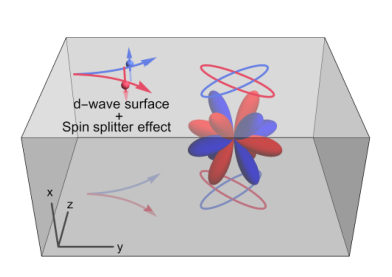
<figcaption class="paper-figure-caption"><b>Fig 1.</b> FIG. 1. Schematic illustration of a bulk g-wave altermag- net in a slab geometry supporting surface d-wave spin split- ting, thereby enabling the concomitant spin splitter effect— generation of transverse spin current upon applying a longi- tudinal charge current. This gives rise to the charge-to-spin conversion capability that is absent in the bulk.</figcaption>
</figure>
<figure class="paper-figure-card">
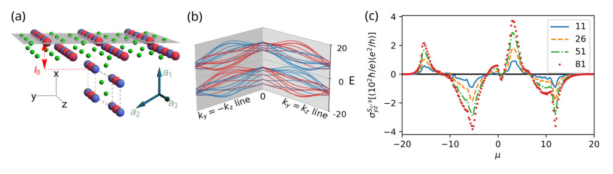
<figcaption class="paper-figure-caption"><b>Fig 2.</b> FIG. 2. Panel (a) illustrates the crystal structure of the (210) surface of the g-wave AM model, which is inspired by the CrSb crystal. The box enclosed by the dashed lines represents the unit cell of the bulk. Blue and red spheres correspond to magnetic sublattices which host the N´eel vector N ∥ˆz in the altermagnetic state. Green spheres represent the nonmagnetic sites. The bulk lattice vectors are a1 = a(1, 0, 0)T , a2 = a(−1/2, √</figcaption>
</figure>
<figure class="paper-figure-card">

<figcaption class="paper-figure-caption"><b>Fig 3.</b> FIG. 3. Spin-splitter angle as a function of the chemical po- tential µ for (210)-oriented slab geometry with different thick- nesses, including 11l0, 26l0, 51l0, and 81l0, characterizing (a) the efficiency in generating a transverse Sz-spin current along z-axis upon applying charge current along y-axis and (b) the efficiency in generating a transverse Sz-spin current along y- axis upon applying charge current along z-axis.</figcaption>
</figure>
<figure class="paper-figure-card">

<figcaption class="paper-figure-caption"><b>Fig 4.</b> Figure 2(c) shows SSE σSz,s yz as a function of the chem- ical potential µ for (210) slabs with different thicknesses, including 11l0, 26l0, 51l0 and 81l0, where l0 is defined in Fig.2(a). Indeed, our results confirm the existence of SSE that accompanies the surface-induced d-wave char- acter. We observe that σSz,s yz increases upon increasing the thickness of the slab. However, to meaningfully ex- amine the charge-to-spin conversion efficiency, we com- pare the SSE with the longitudinal charge conductivity by calculating the following SSE angle [5, 16]</figcaption>
</figure>
<figure class="paper-figure-card">

<figcaption class="paper-figure-caption"><b>Fig 5.</b> FIG. 4. Layer-resolved y-component of the spin magnetiza- tion associated with the weak ferromagnetism in the slab with thickness 11l0. Here, we have chosen a particular value of the chemical potential µ, as specified in SMs.</figcaption>
</figure>
</div>

<p><strong>Summary.</strong> The authors demonstrate that the surfaces of g-wave altermagnets can be engineered to exhibit d-wave altermagnetism, enabling a measurable spin-splitter effect (SSE) absent in the bulk. Using the Kubo formalism on a minimal slab model, they show this surface enhancement is constructive and linked to induced weak ferromagnetism, suggesting thin-film engineering as a viable route for functionalizing such materials.</p>
<p><strong>Why it may be interesting.</strong> This work provides a detailed theoretical mechanism for enhancing magnetic functionalities (SSE) in topological/magnetic materials by exploiting boundary effects, which is highly relevant for designing next-generation spintronic devices.</p>
<details>
<summary>Detailed structure</summary>
<p><strong>Main problem.</strong> To realize and study the spin-splitter effect (SSE) in altermagnets (AMs), overcoming the difficulty of finding metallic d-wave AMs at ambient conditions.</p>
<p><strong>Main result.</strong> The surfaces of a g-wave altermagnet slab induce d-wave altermagnetism, leading to a finite SSE that is absent in the bulk. This surface response can be engineered via thin-film methods.</p>
<p><strong>Method.</strong> The Kubo formalism is applied using a minimal single-orbital tight-binding model to compute spin conductivity and characterize the SSE angle.</p>
<p><strong>Model / system.</strong> The study uses a minimal slab model based on a g-wave altermagnet, which incorporates hopping terms ($t_{1,k}, t_{2,k}, t_{3,k}, t_{AM,k}$) and spin-orbit coupling (SOC) terms. The system is analyzed in the context of surface effects.</p>
<p><strong>Key observables.</strong> Spin conductivity ($\sigma_{S_z, yz}$), SSE angle ($ heta_{aa}$), weak ferromagnetism ($M_y$), and d-wave spin splitting in the electronic spectrum.</p>
<p><strong>Important parameters / regimes.</strong> The maximum spin-splitter angle reached was up to 15 degrees. The analysis depends on the magnetic multipolar character of the AM order parameter.</p>
<p><strong>Assumptions / limitations.</strong> The SSE is fundamentally linked to the magnetic multipolar character of the AM OP, and the calculations rely on a minimal slab model approximation.</p>
<p><strong>Figures summary.</strong> Figures illustrate the surface d-wave splitting enabling SSE (absent in bulk), plot $\sigma_{S_z, yz}$ vs. chemical potential for varying film thicknesses, and show layer-resolved weak ferromagnetism ($M_y$).</p>
<p><strong>Paper structure.</strong> The paper establishes the physical platform (g-wave AM surfaces) and theoretical framework (Kubo formalism). It then calculates the SSE, demonstrating its surface origin via thickness dependence. Finally, it links this effect to induced weak ferromagnetism, suggesting material engineering strategies.</p>
</details>
<details>
<summary>Abstract</summary>
<p>We investigate surfaces of a $g$-wave altermagnet(AM) and show that they provide a platform for realizing $d$-wave altermagnetism and the associated spin-splitter functionality. Using the Kubo formalism applied to a minimal slab model, we evaluate the spin-splitter effect(SSE) by computing the spin conductivity corresponding to a transverse spin current induced by a longitudinal electric field. We find a finite SSE, absent in the bulk, that emerges from surface-induced $d$-wave altermagnetism. Strikingly, the sign pattern of the $d$-wave altermagnetism on both surfaces of the slab geometry is identical to each other, leading to additive contributions to SSE from the two surfaces, with a spin-splitter angle reaching up to 15 degrees. In addition, this response is intrinsically linked to an accompanying surface-induced weak ferromagnetism, which potentially enables control of altermagnetic domains via an external magnetic field and provides a route to optimize the SSE functionality. These results can be understood in terms of a bulk-boundary correspondence between surface states and bulk altermagnetic order parameters, where the magnetic multipolar character of the latter plays a central role. Our findings strongly suggest thin-film engineering as a viable strategy to functionalize non-$d$-wave AMs.</p>
</details>
<p><sub><a href="#top">↑ back to top</a></sub></p>

<p><a id="paper-2607.03678"></a></p>
<h3 id="hybrid-order-nonlinear-topological-phases"><a href="http://arxiv.org/abs/2607.03678v1">Hybrid-order nonlinear topological phases</a></h3>
<p><strong>Authors:</strong> Yu-Peng Ma, Ming-Jian Gao, Jun-Hong An<br>
<strong>Type:</strong> theory · <strong>Category:</strong> other · <strong>PDF:</strong> <a href="https://arxiv.org/pdf/2607.03678v1">https://arxiv.org/pdf/2607.03678v1</a><br>
<strong>Analysis basis:</strong> full PDF text, analyzed in chunks
<strong>Topic relevance:</strong> <code>analog quantum simulation</code> <strong>3/5</strong> · <code>driven-dissipative phase transition</code> <strong>2/5</strong> · <code>exotic spin models in light-matter</code> <strong>1/5</strong> · <code>non-equilibrium dynamics</code> <strong>1/5</strong></p>
<div class="figure-strip-hint">↔ Scroll figures horizontally</div>
<div class="paper-figures-scroll">
<figure class="paper-figure-card">
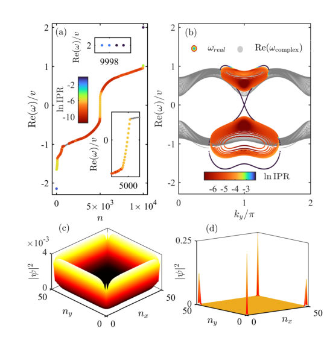
<figcaption class="paper-figure-caption"><b>Fig 1.</b> FIG. 1. Hybrid-order topological phase in a nonlinear- eigenvalue system. Eigenvalue spectra (a) under the OBC to show the coexisting first-order boundary states at ω = 0 and second-order corner states at ω = −M −1 and (b) under the OBC along the x-axis and the PBC along the y-axis to confirm the presence of double-degenerate boundary modes at ω = 0. The colored points denote the IPR of the eigenstates with real eigenvalues. The gray points denote the real part of complex eigenvalues. Probability distributions of (c) the first-order boundary state at ω = 0 and (d) the second-order corner state at ω = −M −1. We use M = −0.5v−1, w = 0.5v, m = 1.5v, r = v, and nx = ny = 50.</figcaption>
</figure>
<figure class="paper-figure-card">

<figcaption class="paper-figure-caption"><b>Fig 2.</b> FIG. 2. Spectrum and topological invariants of the auxiliary system. (a) Eigenvalues of P(k, ω) in different ω when m = 1.5v. The red dashed line indicates λ = 0, whose intersections with the spectrum reproduce the real-ω spectrum in Fig. 1(a). The cyan dashed line denotes p0(ω), which equals to zero just at ω⋆= 0 and −M −1. (b) Eigenvalues and (c) Chern number C2 and mirror-graded winding number W2 of P(k, −M −1) in different m. (d) Eigenvalues of the auxiliary system in the strip geometry when m = −6v to confirm the presence of first-order boundary states at λ = 0. Diagrams of the first- order topological phases characterized by (e) C1 at ω⋆= 0 and (f) C2 at ω⋆= −M −1, and (g) the...</figcaption>
</figure>
<figure class="paper-figure-card">
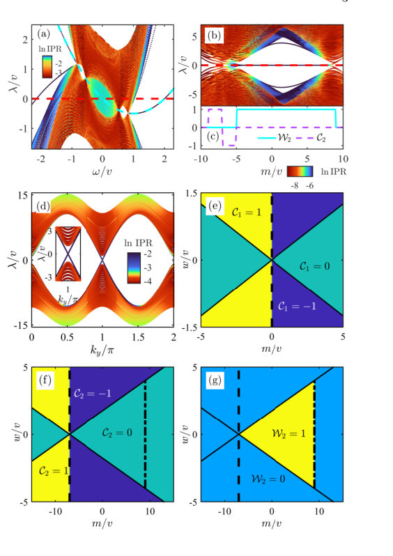
<figcaption class="paper-figure-caption"><b>Fig 3.</b> Figure 2(a) shows the λ spectrum of the auxiliary sys- tem colored by IPR under the OBC in both the x and y directions. Highly localized states intersect with λ = 0</figcaption>
</figure>
<figure class="paper-figure-card">

<figcaption class="paper-figure-caption"><b>Fig 4.</b> FIG. 3. Three-dimensional nonlinear hybrid-order topologi- cal phase. (a) Real nonlinear eigenvalue spectrum under full OBCs. The color determined by ln IPR. The insets show the localized states near ω = −M −1 and ω = 0. (b) Auxiliary spectrum of P3D(k, ω). The red dashed line marks λ = 0, the cyan dashed line shows p0(ω). (c) and (d) is hinge state at ω = 0 and eight corner states at ω = −M −1. We take t1 = 1 and t2 = 15. For (e) and (f), we take t1 = t2 = 1. The state at ω = 0 is a side-surface state at (e), while the state at ω = −M −1 is a hinge state at (f). The (c-f) are colored by z.</figcaption>
</figure>
</div>

<p><strong>Summary.</strong> This paper tackles the challenge of applying bulk-boundary correspondence to complex nonlinear quantum systems. By developing an auxiliary system formalism, the authors successfully classify topological phases in 2D and demonstrate how stacking a 2D model into 3D can engineer distinct hybrid-order topological states, including third-order phases.</p>
<p><strong>Why it may be interesting.</strong> This work extends topological concepts from linear systems into nonlinear regimes using a robust mathematical framework, which is highly relevant for understanding exotic phenomena in photonics and condensed matter wave physics.</p>
<details>
<summary>Detailed structure</summary>
<p><strong>Main problem.</strong> The bulk-boundary correspondence (BBC) is poorly understood for nonlinear systems, especially those with multigap topologies, making topological description difficult.</p>
<p><strong>Main result.</strong> The authors establish a multiband bulk-boundary correspondence and demonstrate that stacking engineering can realize exotic 3D hybrid-order topological phases (first-, second-, and third-order).</p>
<p><strong>Method.</strong> They develop an auxiliary-system formalism to map the nonlinear eigenvalue problem onto a formally linear pencil matrix, allowing for topological classification.</p>
<p><strong>Model / system.</strong> The study uses a two-dimensional (2D) spinless square-lattice model with two degrees of freedom per unit cell, which is then generalized to 3D via uniform or dimerized stacking along the third dimension.</p>
<p><strong>Key observables.</strong> Topological invariants include the Chern number ($C_1$) and the mirror-graded winding number ($W_2$); boundary states are diagnosed by gapless modes ($\lambda=0$) and localized using the Inverse Participation Ratio (IPR).</p>
<p><strong>Important parameters / regimes.</strong> Stacking parameters, such as $  ext{t}_1$ vs. $ ext{t}_2$ for dimerized stacking, determine the resulting order of the topological phase.</p>
<p><strong>Assumptions / limitations.</strong> The method relies on mapping the nonlinear problem to a formally linear auxiliary system ($P(\omega)$) and addresses multiple-gap topologies beyond previous single-gap studies.</p>
<p><strong>Figures summary.</strong> Figures illustrate the eigenvalue spectra under Open Boundary Conditions (OBC) showing coexisting first-order ($\omega=0$) and second-order ($\omega=-M-1$) boundary states, and analyze the auxiliary system spectrum to confirm topological invariants in 2D and 3D.</p>
<p><strong>Paper structure.</strong> The paper first addresses the theoretical gap regarding nonlinear BBC using an auxiliary system formalism. It then analyzes the 2D case showing coexisting boundary/corner states, before extending the analysis to 3D stacking configurations (uniform vs. dimerized) to realize higher-order phases.</p>
</details>
<details>
<summary>Abstract</summary>
<p>The bulk-boundary correspondence (BBC), which relates topological invariants to boundary modes, is well understood for linear systems but remains an open question in the presence of nonlinearity, where multigap topologies make the BBC obscure and the topological description troublesome. We address this by developing an auxiliary-system formalism that enables topological classification of nonlinear-eigenvalue systems. In the two-dimension (2D) case, we show that two fixed eigenvalues can harbor first-order gapless boundary modes and second-order corner modes. Stacking this 2D system along the third dimension (3D) reveals distinct hybrid-order realizations. Under uniform stacking, the corner states in the $xy$ plane transform into hinge states along the $z$ axis, yielding a 3D second-order phase, while the gapless boundary states become side-surface states, yielding a 3D first-order phase. For dimerized stacking, these states are further confined to the two ends of the $z$ axis, yielding a 3D third-order phase, and localized at the hinges, yielding a 3D second-order phase. Our results establish a multiband bulk-boundary correspondence and identify stacking engineering as a versatile platform for exploring hybrid-order topological phases in nonlinear systems.</p>
</details>
<p><sub><a href="#top">↑ back to top</a></sub></p>

<p><a id="paper-2607.05370"></a></p>
<h3 id="calibration-of-systematic-distortions-in-quantum-emitter-localization-microscopy-for-deterministic-nanophotonic-fabrication"><a href="http://arxiv.org/abs/2607.05370v1">Calibration of systematic distortions in quantum emitter localization microscopy for deterministic nanophotonic fabrication</a></h3>
<p><strong>Authors:</strong> Chenxi Ma, Maximilian Heller, Timon Handrup, Yiteng Zhang, Tobias M. Krieger, Thomas Oberleitner, Zenghui Jiang, Xian Zheng, Eddy P. Rugeramigabo, Folke Dencker, Armando Rastelli, Fei Ding, Michael Zopf<br>
<strong>Type:</strong> experiment · <strong>Category:</strong> other · <strong>PDF:</strong> <a href="https://arxiv.org/pdf/2607.05370v1">https://arxiv.org/pdf/2607.05370v1</a><br>
<strong>Analysis basis:</strong> full PDF text, analyzed in chunks
<strong>Topic relevance:</strong> <code>quantum optics experiment</code> <strong>3/5</strong> · <code>quantum measurements</code> <strong>2/5</strong> · <code>interference shaping light</code> <strong>1/5</strong></p>
<div class="figure-strip-hint">↔ Scroll figures horizontally</div>
<div class="paper-figures-scroll">
<figure class="paper-figure-card">
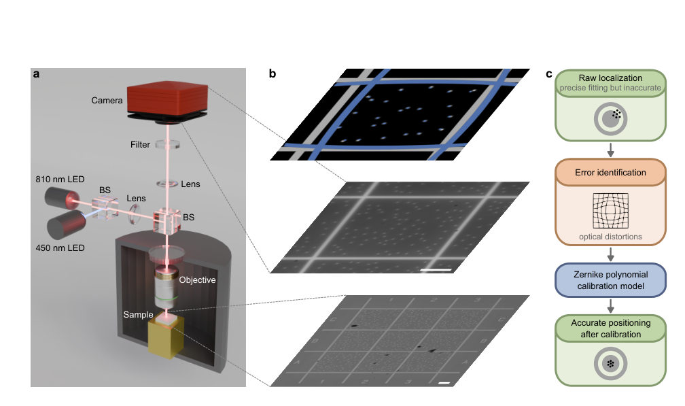
<figcaption class="paper-figure-caption"><b>Fig 1.</b> Figure 1. Schematic of the optical setup and calibration workflow. (a) 3D illustration of the wide-field PL microscope setup for optical positioning. BS, beamsplitter. (b) From bottom to top: SEM image of a 3×3 gold nanodisk calibration array; wide-field reflection image of the central marker field; and conceptual illustration comparing positions extracted from wide-field images (blue) with their nominal design positions (gray). Spatially varying residuals between the two coordinate sets are used to map the optical distortion field. Scale bars in the SEM and reflection images are 10 µm. (c) Distortion calibration workflow.</figcaption>
</figure>
<figure class="paper-figure-card">

<figcaption class="paper-figure-caption"><b>Fig 2.</b> Figure 2. Performance of the optical positioning setup. (a) Representative wide-field PL image of QD emission acquired through a 785 nm narrow bandpass filter. (b) Magnified image of a 2D Gaussian fit for a representative QD. (c) Reflection image of the marker frame and nanodisks from the same field as (a), acquired through a 785 nm narrow bandpass filter. The markers define an area of 40×40 µm2. (d) Representative cross-section of a marker arm and the corresponding fit. (e) Distributions of the fitted FWHM values for QDs and nanodisks, with the shaded region spanning from the Gaussian approximation of the diffraction-limited PSF (FWHMdiff = 473nm) to 2×FWHMdiff. (f) Distributions of the...</figcaption>
</figure>
<figure class="paper-figure-card">
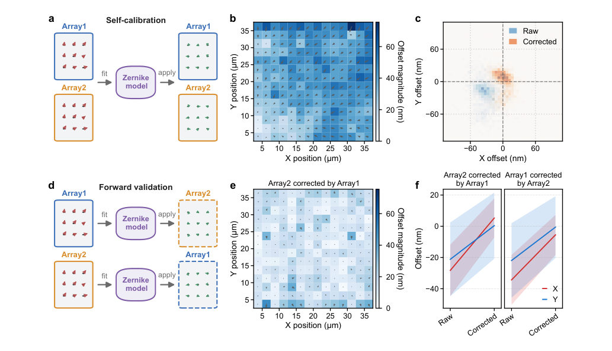
<figcaption class="paper-figure-caption"><b>Fig 3.</b> Figure 3. Training and forward validation of the distortion-calibration model. (a) Schematic of the self-calibration process, in which a Zernike distortion model is fitted to the nanodisk offsets of both arrays. (b) Spatial map of the raw nanodisk offsets between optically extracted positions and design positions for both arrays. The arrows indicate the offset directions, and the color scale indicates the offset magnitude. (c) Overlaid 2D histogram of the nanodisk offsets before (blue) and after (orange) correction by the Zernike distortion model. (d) Schematic of the forward validation process. The model is trained on one array and then applied to the held-out array, after which the...</figcaption>
</figure>
<figure class="paper-figure-card">
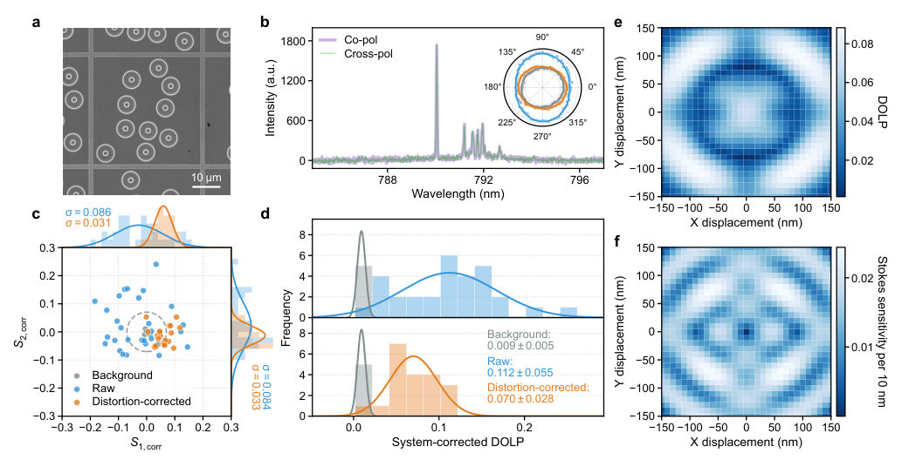
<figcaption class="paper-figure-caption"><b>Fig 4.</b> Figure 4. Polarization response of deterministically fabricated mesas. (a) SEM image of a region inside the mesa array. (b) Background-subtracted co- and cross-polarized PL spectra from a distortion-corrected mesa, corresponding to the polarization angles of Imax and Imin. The inset shows representative polar plots of the integrated PL intensity as a function of the linear polarization angle for a background QD (gray), a raw-positioned mesa (blue), and a distortion-corrected mesa (orange). (c) Scatter plot of the system-corrected Stokes components. The dashed circle indicates the DOLP expected for a centered emitter in an elliptical mesa with SEM-measured diameters. (d) Histograms of...</figcaption>
</figure>
</div>

<p><strong>Summary.</strong> The paper addresses systematic optical distortions that limit the precise placement of quantum emitters in nanophotonic circuits. By developing an <em>in situ</em> calibration protocol based on a Zernike vector-field model, the authors correct these field-dependent aberrations using patterned reference arrays. This correction significantly improves positioning accuracy and enhances the performance metrics of deterministic device fabrication.</p>
<p><strong>Why it may be interesting.</strong> This work provides an essential metrology tool for quantum optics experiments, bridging the gap between statistical measurement precision and absolute positional accuracy required for scalable integrated quantum devices.</p>
<details>
<summary>Detailed structure</summary>
<p><strong>Main problem.</strong> The ultimate yield of integrating quantum emitters into nanophotonic circuits is limited by uncorrected systematic optical distortions in cryogenic microscopy setups, despite achieving high statistical localization precision.</p>
<p><strong>Main result.</strong> An <em>in situ</em> calibration protocol using a Zernike vector-field model successfully reduces residual systematic bias to 5.3 nm and improves the polarization registration accuracy of fabricated structures by 49%.</p>
<p><strong>Method.</strong> The authors developed an in situ calibration protocol that models field-dependent optical distortions using a Zernike polynomial expansion, which is then applied to correct measured emitter positions.</p>
<p><strong>Model / system.</strong> The system involves quantum emitters (semiconductor QDs) localized via microscopy and calibrated against lithographically defined gold nanodisk arrays within a custom cryogenic optical setup. The distortion correction relies on fitting the observed positional offsets to a Zernike vector-field model.</p>
<p><strong>Key observables.</strong> Residual systematic bias (reduced to 5.3 nm), variance in emission polarization, localization repeatability ($\sim 4-6$ nm).</p>
<p><strong>Important parameters / regimes.</strong> Cryogenic temperature (4 K), nanometer-scale accuracy requirement, Zernike polynomial order ($n=10$).</p>
<p><strong>Assumptions / limitations.</strong> The systematic optical distortions can be accurately modeled by a linear combination of Zernike polynomials; the calibration reference patterns are sufficient to characterize the field aberrations.</p>
<p><strong>Figures summary.</strong> Figures illustrate the optical setup, SEM images of gold nanodisk arrays used for calibration, and performance evaluation comparing localization uncertainties before and after applying the Zernike distortion correction.</p>
<p><strong>Paper structure.</strong> The paper first establishes the limitation posed by systematic distortions. It then details the methodology using a Zernike model calibrated on reference patterns (nanodisks). Finally, it demonstrates the utility of this corrected positioning in improving deterministic fabrication metrics like polarization variance.</p>
</details>
<details>
<summary>Abstract</summary>
<p>Quantum photonic technologies greatly benefit from quantum light emitters with high brightness, indistinguishability, and reliable polarization characteristics. Achieving optimal performance relies on the accurate localization of emitters and their deterministic integration into tailored photonic structures with nanometer-scale accuracy. Although marker-based photoluminescence imaging techniques can achieve statistical fitting uncertainties below 10 nm, the ultimate integration yield is often limited by uncorrected systematic distortions in custom cryo-optical setups that compromise metrological accuracy. Here, we present an in situ calibration protocol that uses lithographically defined gold nanodisk arrays as references to calibrate optical distortions with a Zernike vector-field model. On held-out validation patterns beyond the calibration dataset, this correction reduces the residual systematic bias to 5.3 nm with a 2D scatter of 24.6 nm across the analyzed field of view. Furthermore, we demonstrate that applying this correction to the deterministic fabrication of circular mesa structures around semiconductor quantum dots reduces the variance in emission polarization by 49%, indicating improved registration accuracy. This calibration strategy offers a practical route to high-yield deterministic integration of quantum emitters into scalable quantum photonic circuits.</p>
</details>
<p><sub><a href="#top">↑ back to top</a></sub></p>

<p><a id="paper-2607.03954"></a></p>
<h3 id="reentrant-localization-transition-quantum-butterfly-and-robust-edge-modes-in-aperiodic-zig-zag-ladder"><a href="http://arxiv.org/abs/2607.03954v1">Reentrant localization transition, quantum butterfly and robust edge modes in aperiodic zig-zag ladder</a></h3>
<p><strong>Authors:</strong> Sayan Bhattacharya, Rhiddha Acharjee, Atanu Nandy<br>
<strong>Type:</strong> theory · <strong>Category:</strong> disordered systems and neural networks · <strong>PDF:</strong> <a href="https://arxiv.org/pdf/2607.03954v1">https://arxiv.org/pdf/2607.03954v1</a><br>
<strong>Analysis basis:</strong> full PDF text, analyzed in chunks
<strong>Topic relevance:</strong> <code>analog quantum simulation</code> <strong>2/5</strong> · <code>driven-dissipative phase transition</code> <strong>2/5</strong> · <code>non-equilibrium dynamics</code> <strong>2/5</strong> · <code>non-equilibrium universality</code> <strong>2/5</strong> · <code>Frenkel-Kontorova</code> <strong>1/5</strong> · <code>entanglement &amp; information structure</code> <strong>1/5</strong> · <code>methods for driven-dissipative</code> <strong>1/5</strong> · <code>scars &amp; prethermalization</code> <strong>1/5</strong></p>
<div class="figure-strip-hint">↔ Scroll figures horizontally</div>
<div class="paper-figures-scroll">
<figure class="paper-figure-card">

<figcaption class="paper-figure-caption"><b>Fig 1.</b> FIG. 1. A portion of a quasi-one dimensional zig-zag ladder.</figcaption>
</figure>
<figure class="paper-figure-card">
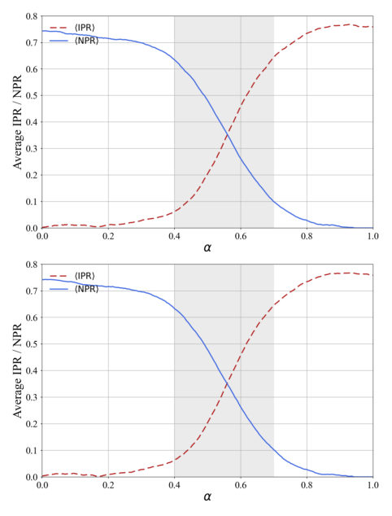
<figcaption class="paper-figure-caption"><b>Fig 2.</b> FIG. 2. (a) and (b) The average inverse participation ra- tio, ⟨IPR⟩, and the average normalized participation ratio, ⟨NPR⟩, with respect to α respectively, for disorder strengths λ0 &lt; t &amp; λ0 &gt; t, where t is the vertical hopping.</figcaption>
</figure>
<figure class="paper-figure-card">
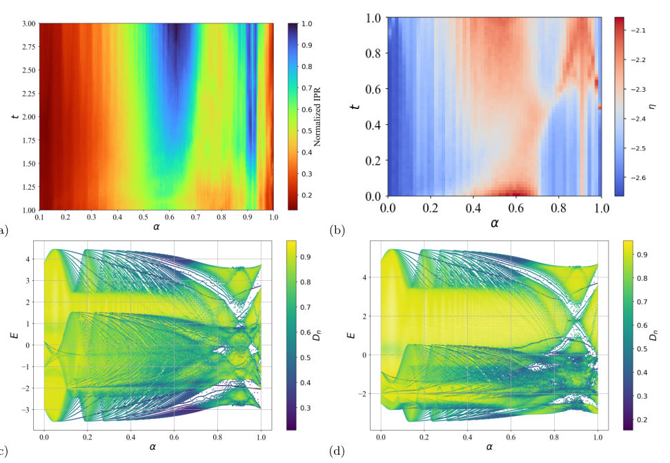
<figcaption class="paper-figure-caption"><b>Fig 3.</b> FIG. 3. (a) IPR intensity distribution in t vs α space, (b) phase diagram of η in t vs α space, and fractal dimension in E vs α plane with (c) t⟨λ0 and (d) t⟩λ0.</figcaption>
</figure>
<figure class="paper-figure-card">
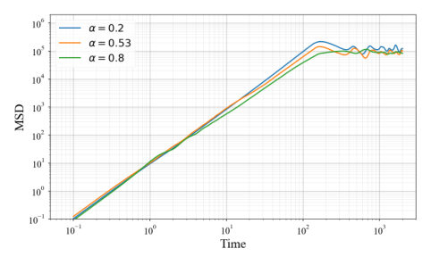
<figcaption class="paper-figure-caption"><b>Fig 4.</b> FIG. 4. Time evolution of the mean square displacement (MSD) for three representative values of the slowness expo- nent α with the quasiperiodic modulation parameter fixed at the golden mean, Q = (1 + √</figcaption>
</figure>
<figure class="paper-figure-card">

<figcaption class="paper-figure-caption"><b>Fig 5.</b> FIG. 5. (a) Variation of density of states with energy (b) inverse participation ratio with energy (c) variation of IPR with system size, (d)-(f) MFA spectrum for E = 1.75 (extended state) and E = 3.75 (critical state). The finite-size scaling yields slopes of −1.0067 for the extended state and 0.2622 for the critical state.</figcaption>
</figure>
</div>

<p><strong>Summary.</strong> This work explores the complex electronic behavior of a quasi-one dimensional ladder lattice subjected to quasiperiodic modulation. The authors demonstrate a reentrant transition between localized and delocalized states, characterized by mobility edges. Furthermore, they identify robust edge modes whose existence is mapped onto an intriguing 'Quantum Butterfly' spectrum.</p>
<p><strong>Why it may be interesting.</strong> The study provides detailed diagnostics—combining spectral measures (IPR), transport dynamics ($\mu$), and geometric features (butterfly)—to map out complex phase transitions in quasiperiodic systems, which is highly relevant for understanding localization phenomena beyond simple disorder models.</p>
<details>
<summary>Detailed structure</summary>
<p><strong>Main problem.</strong> The study investigates a reentrant localization transition, quantum butterfly pattern, and robust edge modes in an aperiodic zig-zag ladder structure.</p>
<p><strong>Main result.</strong> The system exhibits a re-emerging delocalization phase controlled by kinetic parameters, confirmed by mobility edges, alongside the observation of stable edge states resistant to moderate disorder.</p>
<p><strong>Method.</strong> Analysis involves calculating spectral properties using Inverse Participation Ratio (IPR), studying transport dynamics via Mean Square Displacement (MSD), and mapping energy spectra onto a quantum butterfly structure.</p>
<p><strong>Model / system.</strong> The model is a quasi-one dimensional zig-zag ladder network governed by a tight-binding Hamiltonian incorporating a quasiperiodic Aubry-Andre Harper (AAH) modulation in the long-range hopping integral.</p>
<p><strong>Key observables.</strong> Inverse Participation Ratio ($ ext{IPR}<em ext_edge="ext{edge">n$), Normalized Participation Ratio ($  ext{NPR}_n$), Mean Square Displacement (MSD), Edge Probability ($P</em>$), and Transport Exponent ($\mu$).}</p>
<p><strong>Important parameters / regimes.</strong> Slowness exponent ($\alpha$), hopping strengths ($t, \lambda_0$), disorder strength ($W_d$), and modulation frequency ($eta$ set to the golden mean).</p>
<p><strong>Assumptions / limitations.</strong> The analysis assumes that multifractal methods are applicable to characterize the energy landscape in this quasiperiodic model.</p>
<p><strong>Figures summary.</strong> Figures illustrate IPR intensity plots showing re-entrant transitions, phase diagrams mapping delocalized/localized regimes ($\eta$), MSD curves characterizing transport exponents ($\mu$), and probability density maps distinguishing edge vs. bulk states on the quantum butterfly spectrum.</p>
<p><strong>Paper structure.</strong> The paper systematically analyzes localization diagnostics (IPR, $ ext{NPR}$) to find a re-entrant transition controlled by $\alpha$. It then uses dynamical studies (MSD) for confirmation, explores multifractality and the 'Quantum Butterfly' structure, and finally isolates robust edge modes using edge probability analysis.</p>
</details>
<details>
<summary>Abstract</summary>
<p>Low dimensional tight-binding lattices in presence of quasiperiodic disorder generally exhibits localization transition. The system supports diffusive modes upto a limiting strength of disorder and all the eigenstates become localized beyond that critical strength thereby quenching the kinetic signature of the wavepacket. However, moving away from this situation, we demonstrate that with minimal long-range off-diagonal modulation, the eigenspectrum again may offer delocalization of electronic states for some subtle combination of kinetic parameters of the Hamiltonian leading to a second quantum phase change. The localization transitions are associated with the obvious presence of single-particle mobility edges. Multifractal energy landscape also shows quantum butterfly pattern with the in-gap robust edge modes. The re-emerging localization transition is manifested through the evaluation of inverse participation ratio, eigenspectrum and a pertinent quantum dynamical study.</p>
</details>
<p><sub><a href="#top">↑ back to top</a></sub></p>

<p><a id="paper-2607.05172"></a></p>
<h3 id="platinum-is-a-photocatalyst-large-visible-light-quantum-efficiency-revealed"><a href="http://arxiv.org/abs/2607.05172v1">Platinum is a Photocatalyst: Large Visible-Light Quantum Efficiency Revealed</a></h3>
<p><strong>Authors:</strong> Olivier Henrotte, Yin Chak Wong, Jordan Edwards, Simão Meneses João, Štěpán Kment, Emiliano Cortés, Johannes Lischner, Alberto Naldoni<br>
<strong>Type:</strong> both · <strong>Category:</strong> other · <strong>PDF:</strong> <a href="https://arxiv.org/pdf/2607.05172v1">https://arxiv.org/pdf/2607.05172v1</a><br>
<strong>Analysis basis:</strong> full PDF text, analyzed in chunks
<strong>Topic relevance:</strong> <code>non-equilibrium dynamics</code> <strong>2/5</strong> · <code>Keldysh / 2PI / non-Gaussian methods</code> <strong>1/5</strong> · <code>correlated / nonlocal dissipation</code> <strong>1/5</strong> · <code>driven-dissipative phase transition</code> <strong>1/5</strong> · <code>entanglement &amp; information structure</code> <strong>1/5</strong> · <code>methods for driven-dissipative</code> <strong>1/5</strong> · <code>non-equilibrium universality</code> <strong>1/5</strong></p>
<div class="figure-strip-hint">↔ Scroll figures horizontally</div>
<div class="paper-figures-scroll">
<figure class="paper-figure-card">

<figcaption class="paper-figure-caption"><b>Fig 1.</b> Figure 1. Scanning photoelectrochemical microscopy platform and energetic framework for Au- TiO2 and Pt-TiO2 photoactivity. (a) Schematic of the SPECM configuration. (b) Energy-level band showing the relevant electronic levels of Au and Pt (Fermi level EF; schematic sp- and d-bands), the TiO2 band edges (conduction band, C.B.; valence band, V.B.), and the FcDM/FcDM+ redox couple. (c,d) Electronic band structure of Au (c), and Pt (d) from tight-binding highlighting representative optical excitation pathways under visible illumination.</figcaption>
</figure>
<figure class="paper-figure-card">
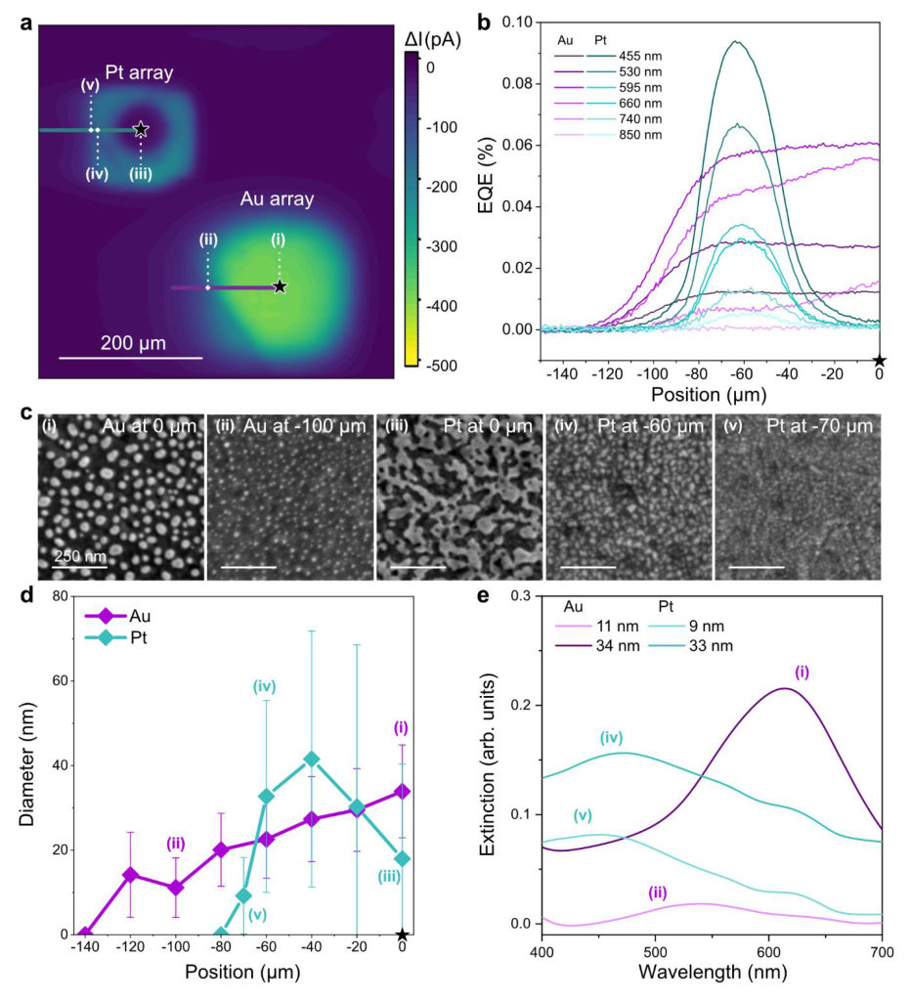
<figcaption class="paper-figure-caption"><b>Fig 2.</b> Figure 2. Position-resolved external quantum efficiency (EQE), morphology, and optical properties of Au and Pt nanoislands. (a) SPECM photoactivity map acquired over the Pt nanoisland array and the Au nanoisland array under visible illumination, used to identify the scan trajectories and regions of interest; the stars indicate the centre of the arrays. The markers (i) to (v) correspond to positions of interest. (b) EQE as a function of position along the scan line indicated in (a); 0 µm corresponds to the stars in (a). Au data are shown from purple to pink and Pt data from teal to cyan, with each trace corresponding to a different excitation wavelength. (c) SEM images of the Au array after...</figcaption>
</figure>
<figure class="paper-figure-card">

<figcaption class="paper-figure-caption"><b>Fig 3.</b> Figure 3. Theoretical simulation of hot carrier generation in Au and Pt nanoislands on a TiO2 thin film. (a) Energetic distribution of hot electrons (purple line) and hot holes (red line) in a spherical Au nanoparticle of 10 nm diameter for different excitation wavelengths in a high-permittivity environment (εm=4). (b) Energetic distribution of hot electrons (cyan line) and hot holes (red line) in a spherical Pt nanoparticle of 10 nm diameter for different excitation wavelengths in a high- permittivity environment (εm=4). The number of above-Schottky barrier electrons (corresponding to the number of extractable holes) are represented by the filled region in purple for Au and cyan for Pt....</figcaption>
</figure>
<figure class="paper-figure-card">
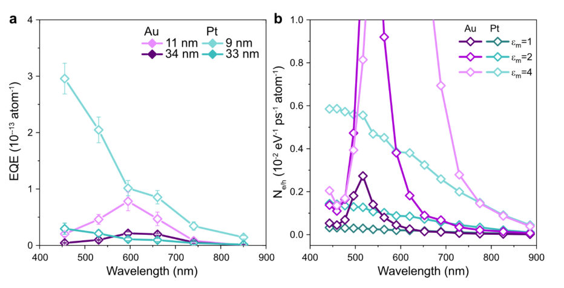
<figcaption class="paper-figure-caption"><b>Fig 4.</b> Figure 4. Comparison of external quantum efficiency and theoretical hot carrier generation with above Schottky barrier energy of Au and Pt nanoislands on TiO2 thin film. (a) External quantum efficiency (EQE) per atom as a function of excitation wavelength for different populations of Au (11 nm, pink; 34 nm, purple) and Pt (9 nm, cyan; 33 nm, teal) nanoislands. (b) Calculated number of generated hot electrons above Schottky barrier per atom for a 10 nm nanoparticle of Au (purple to pink) and Pt (teal to cyan) for different εm.</figcaption>
</figure>
</div>

<p><strong>Summary.</strong> The researchers demonstrated that Platinum nanoislands on TiO2 can act as highly efficient visible-light photocatalysts, contrary to previous beliefs. By using advanced microscopy, they quantified the photoactivity of Pt compared to Au, finding superior performance for discrete Pt structures. This work reclassifies Pt from a passive co-catalyst to an active component in metal-semiconductor hybrid devices.</p>
<p><strong>Why it may be interesting.</strong> While focused on solid-state electrochemistry, the work involves quantifying charge carrier generation and separation efficiency under optical excitation, which touches upon open quantum systems concepts related to energy dissipation and interfacial coupling.</p>
<details>
<summary>Detailed structure</summary>
<p><strong>Main problem.</strong> To challenge the assumption that noble metal catalysts like Platinum (Pt) are only passive co-catalysts with poor visible-light quantum efficiency in photoelectrochemical junctions.</p>
<p><strong>Main result.</strong> Discrete Pt nanoislands exhibit robust, broadband visible-light photoactivity, showing an EQE-per-atom significantly higher than Au at specific wavelengths, suggesting they function as active light-responsive components.</p>
<p><strong>Method.</strong> Quantitative scanning photoelectrochemical microscopy (SPECM) was used to measure wavelength-resolved external quantum efficiency (EQE), complemented by theoretical hot-carrier generation rate calculations.</p>
<p><strong>Model / system.</strong> The study investigates metal-semiconductor junctions, specifically Au and Pt nanoislands deposited on a TiO2 support. The photoactivity is governed by the efficient separation of photogenerated carriers across the Schottky junction barrier.</p>
<p><strong>Key observables.</strong> Wavelength-resolved external quantum efficiency (EQE), local extinction spectra, and the comparison of $   ext{Pt}$ vs. $  ext{Au}$ photoactivity as a function of nanostructure connectivity.</p>
<p><strong>Important parameters / regimes.</strong> The effective Schottky barriers ($\Phi_B$) for Au-TiO2 (1.1 eV) and Pt-TiO2 (1.3 eV); the comparison between discrete vs. connected nanoisland morphologies.</p>
<p><strong>Assumptions / limitations.</strong> The measured signal reflects net interfacial charge separation; theoretical models provide an upper limit for carrier generation, neglecting certain recombination pathways.</p>
<p><strong>Figures summary.</strong> Figures likely show position-resolved maps of EQE across Au and Pt arrays, correlating photoactivity with the local optical properties (LSPR vs. broadband absorption).</p>
<p><strong>Paper structure.</strong> The paper establishes the problem by reviewing existing assumptions about noble metals; it presents experimental measurements using SPECM to quantify visible-light activity; theoretical modeling is used to interpret the results based on hot-carrier dynamics and barrier filtering.</p>
</details>
<details>
<summary>Abstract</summary>
<p>Metal-semiconductor junctions in optoelectronic devices are commonly engineered to promote charge separation. In Pt/TiO2 Schottky junctions, Pt is typically regarded as a catalytic electron sink rather than a visible-light-active component. Here, we demonstrate that Pt nanoislands on TiO2 can generate photochemically active carriers under visible light excitation. Using quantitative scanning photoelectrochemical microscopy, we measure the wavelength-resolved external quantum efficiency (EQE) of Au and Pt nanoisland arrays on TiO2, and correlate their reactivity with their morphology and extinction spectra. Discrete 10 nm Pt nanoislands exhibit robust broadband visible light photoactivity - exceeding the photoactivity of similar-sized Au nanoislands under blue-green excitation - whereas Pt's photoactivity is strongly suppressed when the nanoislands are connected. Surprisingly, Pt exhibits an EQE-per-atom approx. 20 times higher than Au at 455 nm and approx. 2 times higher at 595 nm (at Au's optimum). We show an approximately wavelength-independent Pt internal quantum efficiency of approx. 1 percent across the visible spectral region. These findings reposition catalytic metals with strongly damped optical response in the visible as light-responsive components in metal-semiconductor hybrids, challenging the prevailing perception that they function solely as passive co-catalysts in photocatalytic systems.</p>
</details>
<p><sub><a href="#top">↑ back to top</a></sub></p>

<p><a id="paper-2607.05039"></a></p>
<h3 id="coexisting-charge-density-wave-and-superconducting-order-in-quantizing-magnetic-fields"><a href="http://arxiv.org/abs/2607.05039v1">Coexisting Charge Density Wave and Superconducting Order in Quantizing Magnetic Fields</a></h3>
<p><strong>Authors:</strong> Ron Q. Nguyen, Peiyu Qin, Hai-Tian Wu, Sparsh Mishra, Tobias Wolf, Joseph Roll, Erin Morissette, Naiyuan J. Zhang, Sarah Alkidim, Kenji Watanabe, Takashi Taniguchi, Aaron W. Hui, Dima E. Feldman, Allan MacDonald, J. I. A. Li<br>
<strong>Type:</strong> experiment · <strong>Category:</strong> strongly correlated electrons · <strong>PDF:</strong> <a href="https://arxiv.org/pdf/2607.05039v1">https://arxiv.org/pdf/2607.05039v1</a><br>
<strong>Analysis basis:</strong> full PDF text, analyzed in chunks
<strong>Topic relevance:</strong> <code>driven-dissipative phase transition</code> <strong>2/5</strong> · <code>Frenkel-Kontorova</code> <strong>1/5</strong> · <code>analog quantum simulation</code> <strong>1/5</strong> · <code>correlated cavity matter</code> <strong>1/5</strong> · <code>non-equilibrium dynamics</code> <strong>1/5</strong></p>
<div class="figure-strip-hint">↔ Scroll figures horizontally</div>
<div class="paper-figures-scroll">
<figure class="paper-figure-card">

<figcaption class="paper-figure-caption"><b>Fig 1.</b> FIG. 1. LL formation at the flat-band edge. (a) Schematic illustration of LL formation in a dispersive band (left) and near a flat-band edge (right). The flat-band edge enhances mixing among nearly degenerate LLs. (b) Conduction-band dispersion of R6G calculated using Slonczewski–Weiss–McClure (SWMc) parameters γ0 and γ1 [44]. This simplified band-structure calculation neglects trigonal warping and other higher-order hopping terms (see Fig. M1d for a more realistic calculation). (c) Landau-level spectrum derived from the band structure shown in (b), obtained using the continuum model [45]. The bottom panel displays a zoomed-in view of the low-energy edge of the spectrum. (d) n–D map of the...</figcaption>
</figure>
<figure class="paper-figure-card">

<figcaption class="paper-figure-caption"><b>Fig 2.</b> FIG. 2. Two limits of CDW order. (a–d) Transverse and longitudinal conductivities, σxy (a, c) and σxx (b, d), as functions of carrier density measured at D = 967 mV/nm and perpendicular magnetic fields of (a, b) B⊥= 6 T, and (c, d) 4.3 T, along the horizontal cuts indicated in Fig. 1e–f. Green and red shaded regions denote conventional quantum Hall states and re-entrant integer quantum Hall states, respectively. (e) Number of carriers incorporated into the CDW order, nCDW, as a function of the total carrier density, n. The dashed, dash-dotted, and dotted lines denote n = nCDW, n = 2nCDW, and n = 3nCDW, respectively. RIQH states are observed only at 2nCDW &lt; n &lt; 3nCDW. The gray-shaded region...</figcaption>
</figure>
<figure class="paper-figure-card">

<figcaption class="paper-figure-caption"><b>Fig 3.</b> FIG. 3. Superconductivity emerging from LL formation. (a) n–D maps of R∥measured at fixed perpendicular magnetic fields B⊥. (b) Line cut of the longitudinal (top) and transverse (bottom) resistance as a function of n, measured at D = 990 mV/nm and B⊥= 2 T, corresponding to the horizontal gray bar in panel (a). Vertical dashed lines mark the density ranges of regimes II and III. Within regime II, two distinct low-temperature phases emerge from the CDW background: a RIQH state, and superconductivity (SC), marked by vanishing longitudinal resistance. (c, d) Temperature dependence of the longitudinal (top) and transverse (bottom) resistance measured in (c) the RIQH state and (d) the...</figcaption>
</figure>
<figure class="paper-figure-card">
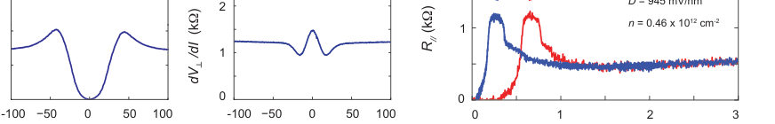
<figcaption class="paper-figure-caption"><b>Fig 4.</b> FIG. 4. I–V characteristics. (a) Longitudinal differential resistance, dV∥/dI, as a function of Id.c. and n across regimes II and III, measured at B⊥= 2 T and D = 1005 mV/nm. (b, c) Differential resistance measured as a function of Id.c. in the longitudinal (top) and transverse (bottom) channels at the (b) superconducting and (c) RIQH states, respectively, with locations indicated by the white dashed lines in panel (a). (d) Temperature dependence of R∥measured in the CDW (orange) and superconducting (blue) states in regime I. (e, f) R∥–T traces measured during cooling (blue) and warming (red) for the same (e) CDW and (f) superconducting states shown in panel (d).</figcaption>
</figure>
</div>

<p><strong>Summary.</strong> This work explores the intertwined physics of Charge Density Waves (CDW) and Superconductivity (SC) in graphene under strong magnetic fields. By analyzing transport measurements, the authors provide evidence that CDW order is responsible for stabilizing SC phases deep within the quantum Hall regime. This highlights a complex interplay between charge ordering, superconductivity, and Landau quantization in strongly correlated electron systems.</p>
<p><strong>Why it may be interesting.</strong> The observation that CDW order can stabilize superconductivity in a quantum Hall regime is highly relevant to understanding unconventional pairing mechanisms and competing orders in strongly correlated materials, which are central topics in condensed matter theory.</p>
<details>
<summary>Detailed structure</summary>
<p><strong>Main problem.</strong> The study investigates the complex interplay between Charge Density Wave (CDW) order, Superconductivity (SC), and Quantum Hall Effects (QHE) in a highly tunable electronic system.</p>
<p><strong>Main result.</strong> The research demonstrates that CDW order is crucial for stabilizing superconductivity deep within the quantum Hall regime, marking an observation of SC coexisting with QHE signatures. The CDW and SC phases emerge from the same manifold of strongly mixed Landau levels.</p>
<p><strong>Method.</strong> Transport measurements ($
ho_{xx}, \sigma_{xy}$) are performed as functions of carrier density ($n$), perpendicular magnetic field ($B_\perp$), and displacement field ($D$). Temperature dependence studies reveal first-order phase transitions.</p>
<p><strong>Model / system.</strong> The physical platform is rhombohedral hexalayer graphene (R6G) subjected to a large displacement field and a strong magnetic field. The system's low-energy spectrum features strongly mixed Landau levels due to flat band edges, enabling the investigation of correlated electronic phases.</p>
<p><strong>Key observables.</strong> Integer Quantum Hall plateaus deviating from filling factors; pronounced thermal hysteresis (CDW signature); simultaneous vanishing of $
ho_{xx}$ and $
ho_{xy}$ (SC signature).</p>
<p><strong>Important parameters / regimes.</strong> Strong perpendicular magnetic fields ($B_\perp > 2$ T); operating near the flat-band edge; temperature dependence across multiple Kelvin scales.</p>
<p><strong>Assumptions / limitations.</strong> The analysis relies on mapping transport responses to diagnose distinct electronic orders (CDW, SC, QHE) coexisting in a strongly correlated electron liquid.</p>
<p><strong>Figures summary.</strong> Figures map out phase boundaries in $n-D$ and $n-B_\perp$ space, showing regimes characterized by CDW signatures (hysteresis, re-entrant QHE) adjacent to superconducting pockets.</p>
<p><strong>Paper structure.</strong> The paper systematically maps the phase diagram of R6G under varying fields and doping, identifying distinct electronic phases (Regimes I, II, III). It then analyzes specific transport diagnostics—such as thermal hysteresis for CDW melting or simultaneous zero resistance for SC—to confirm the coexistence region.</p>
</details>
<details>
<summary>Abstract</summary>
<p>Charge density wave (CDW) and superconductivity are both common in strongly interacting electron systems. While CDW order is ubiquitous in both quantum Hall systems and unconventional superconductors, superconductivity is generally suppressed by the strong magnetic fields required for Landau quantization. Here we investigate the intertwined CDW and superconducting phases of rhombohedral hexalayer graphene (R6G) in a large displacement field, which generates tunable flat band edges, and a strong magnetic field, which generates a manifold of nearly degenerate Landau levels. CDW order is accompanied by pronounced thermal hysteresis as expected for first-order melting transitions. Surprisingly, we find a series of strong integer quantum Hall effects at magnetic fields above ~2T with Hall conductance quantum numbers that deviate strongly from nearby integer filling factors, an observation that can be explained only by CDW order that mixes many Landau levels. We also find a nearby superconducting phase that is stabilized by perpendicular magnetic fields and persists deep within the quantum Hall regime. The CDW and superconducting phases develop on comparable temperature scales and emerge from the same manifold of strongly mixed Landau levels. These observations provide new insight into the interplay between superconductivity and CDW order in R6G at zero magnetic field.</p>
</details>
<p><sub><a href="#top">↑ back to top</a></sub></p>

<p><a id="paper-2607.04754"></a></p>
<h3 id="observation-of-non-linear-hall-effect-in-polycrystalline-magnetic-multilayes"><a href="http://arxiv.org/abs/2607.04754v1">Observation of Non-linear hall effect in Polycrystalline magnetic multilayes</a></h3>
<p><strong>Authors:</strong> Preet Kamal, Chirag kalouni, Amiya Mondal, Awadesh Narayan, Debangsu Roy<br>
<strong>Type:</strong> both · <strong>Category:</strong> other · <strong>PDF:</strong> <a href="https://arxiv.org/pdf/2607.04754v1">https://arxiv.org/pdf/2607.04754v1</a><br>
<strong>Analysis basis:</strong> full PDF text, analyzed in chunks
<strong>Topic relevance:</strong> <code>spintronics-quantum-optics interface</code> <strong>2/5</strong> · <code>Kondo &amp; dissipative impurity</code> <strong>1/5</strong> · <code>analog quantum simulation</code> <strong>1/5</strong> · <code>exotic spin models in light-matter</code> <strong>1/5</strong> · <code>non-equilibrium dynamics</code> <strong>1/5</strong></p>
<div class="figure-strip-hint">↔ Scroll figures horizontally</div>
<div class="paper-figures-scroll">
<figure class="paper-figure-card">

<figcaption class="paper-figure-caption"><b>Fig 1.</b> FIG. 1. Basic characterization of the Ta(3 nm)/Pt(5 nm)/[Ir/Fe/Co/Pt]₅/Pt(2 nm) multilayer device.</figcaption>
</figure>
<figure class="paper-figure-card">
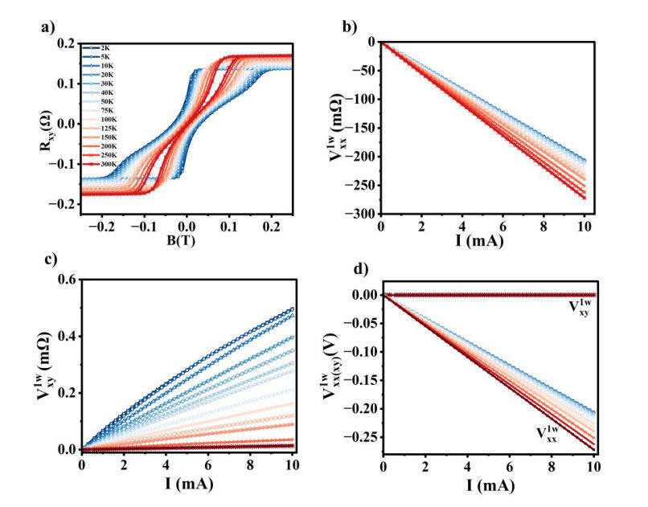
<figcaption class="paper-figure-caption"><b>Fig 2.</b> FIG. 2. (a) Anomalous Hall resistance 𝑅𝑥𝑦 as a function of out-of-plane magnetic field B measured</figcaption>
</figure>
<figure class="paper-figure-card">
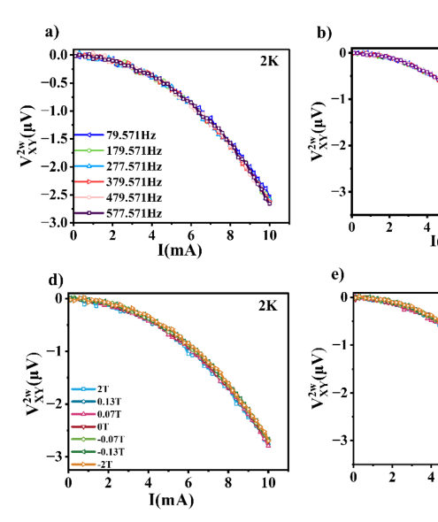
<figcaption class="paper-figure-caption"><b>Fig 3.</b> FIG. 3. (a–c) 𝑉𝑥𝑦</figcaption>
</figure>
<figure class="paper-figure-card">
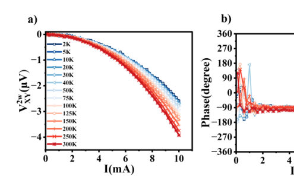
<figcaption class="paper-figure-caption"><b>Fig 4.</b> FIG. 4. (a) Second-harmonic transverse voltage 𝑉𝑥𝑦</figcaption>
</figure>
<figure class="paper-figure-card">

<figcaption class="paper-figure-caption"><b>Fig 5.</b> FIG. 5. (a) Second-order transverse electric field 𝐸𝑥𝑦</figcaption>
</figure>
</div>

<p><strong>Summary.</strong> This work reports the observation of a robust Nonlinear Hall Effect (NLHE) in polycrystalline magnetic multilayers. By measuring second-harmonic voltages and performing theoretical calculations, the authors prove that this effect originates from the intrinsic Berry curvature dipole generated at interfaces. This establishes these scalable thin films as a promising new platform for next-generation nonlinear spintronic devices.</p>
<p><strong>Why it may be interesting.</strong> While focused on condensed matter spintronics, the reliance on quantum geometric effects like the BCD and symmetry analysis mirrors concepts used in topological materials research relevant to AMO physics.</p>
<details>
<summary>Detailed structure</summary>
<p><strong>Main problem.</strong> The study aims to observe and characterize the Nonlinear Hall Effect (NLHE) in technologically relevant magnetic multilayer platforms, extending its understanding beyond van der Waals crystals.</p>
<p><strong>Main result.</strong> A robust NLHE was observed in polycrystalline magnetic multilayers, confirming that the effect is driven by the intrinsic Berry curvature dipole (BCD), establishing these films as a new platform for spintronic applications.</p>
<p><strong>Method.</strong> The research combines transport measurements of second-harmonic transverse voltage ($V_{xy}^{2\omega}$) with theoretical analysis using first-principles DFT calculations to confirm the underlying electronic mechanism.</p>
<p><strong>Model / system.</strong> The system is a polycrystalline magnetic multilayer heterostructure, specifically $ ext{Ta}/    ext{Pt}/[   ext{Ir}/    ext{Fe}/    ext{Co}/    ext{Pt}]_5/ ext{Pt}$. The physics is governed by spin-orbit coupling and broken structural inversion symmetry at the interfaces.</p>
<p><strong>Key observables.</strong> Second-harmonic transverse voltage ($V_{xy}^{2\omega}$), which shows quadratic dependence on current, frequency independence, and magnetic field independence; also measured $R_{xx}$, $V_{xy}^{1\omega}$, and XRD patterns.</p>
<p><strong>Important parameters / regimes.</strong> Temperature range (2 K to room temperature); applied magnetic fields ($\pm 2 	ext{ T}$); multilayer periodicity ($[\dots]_5$).</p>
<p><strong>Assumptions / limitations.</strong> The observed NLHE signal is assumed to be dominated by the intrinsic Berry curvature dipole mechanism, supported by vanishing third-harmonic response and scaling analysis.</p>
<p><strong>Figures summary.</strong> Figures show layer architecture, Hall bar geometry, $R_{xx}$ vs. T (metallic behavior), XRD patterns confirming texture, linear transport measurements ($V^{1\omega}$), and nonlinear measurements ($V^{2\omega}$) showing quadratic dependence on current.</p>
<p><strong>Paper structure.</strong> The paper first establishes the measurement setup by measuring linear transport; it then measures the second-harmonic voltage to confirm a genuine nonlinear response; finally, theoretical analysis (DFT) links this observed signal magnitude directly to the intrinsic Berry curvature dipole component ($D_{yz}$).</p>
</details>
<details>
<summary>Abstract</summary>
<p>The Nonlinear Hall effect(NLHE) driven principally by the Berry curvature dipole has been established in non-centrosymmetric vander Waals crystals, topological semimetals, and moiré superlattices, but its extension to technologically mature heavy-metal/ferromagnet multilayer platforms remains largely unexplored. Here, we report the observation of a robust NLHE in polycrystalline magnetic multilayers, persisting from 2 K to room temperature. The second-harmonic transverse voltage is independent of both excitation frequency and applied out-of-plane magnetic field, while the vanishingly small third-harmonic response confirms that the observed signal is not dominated by a quantum-metric contribution and instead reflects a genuine second-order electronic response. A scaling analysis of the second-order Hall conductivity against the longitudinal conductivity identifies a dominant, conductivity-independent term establishing the intrinsic berry curvature dipole. Our theoretical analysis, supported by first-principles DFT calculations, further satisfies and corroborates the experimental results. These results establish sputter-deposited polycrystalline thin film as the first engineered magnetic multilayer platform for BCD-driven nonlinear Hall transport, extending the NLHE material landscape beyond van der Waals systems into scalable, industry-compatible thin-film spintronic architectures suitable for high frequency rectifications and nonlinear sensors.</p>
</details>
<p><sub><a href="#top">↑ back to top</a></sub></p>

<p><a id="paper-2607.04358"></a></p>
<h3 id="quasi-two-dimensional-majorana-zero-modes-from-finite-size-coupled-chiral-hinge-states"><a href="http://arxiv.org/abs/2607.04358v1">Quasi-two-dimensional Majorana zero modes from finite-size-coupled chiral hinge states</a></h3>
<p><strong>Authors:</strong> Wenhao Liang, Xun-Jiang Luo<br>
<strong>Type:</strong> theory · <strong>Category:</strong> other · <strong>PDF:</strong> <a href="https://arxiv.org/pdf/2607.04358v1">https://arxiv.org/pdf/2607.04358v1</a><br>
<strong>Analysis basis:</strong> full PDF text, analyzed in chunks
<strong>Topic relevance:</strong> <code>analog quantum simulation</code> <strong>2/5</strong> · <code>Keldysh / 2PI / non-Gaussian methods</code> <strong>1/5</strong> · <code>correlated / nonlocal dissipation</code> <strong>1/5</strong> · <code>driven-dissipative phase transition</code> <strong>1/5</strong> · <code>methods for driven-dissipative</code> <strong>1/5</strong></p>
<div class="figure-strip-hint">↔ Scroll figures horizontally</div>
<div class="paper-figures-scroll">
<figure class="paper-figure-card">
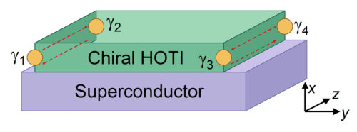
<figcaption class="paper-figure-caption"><b>Fig 1.</b> FIG. 1. Schematic of the quasi-two-dimensional HOTI- superconductor geometry. A chiral HOTI slab is proximi- tized by a conventional s-wave superconductor. The sample is thin along x, extended along y, and finite along z. Oppo- site z-directed hinge states hybridize across the thin direction. The proximity-induced pairing gaps the two separated hinge- derived channels indicated by dashed red arrows. The four MZMs γ1,2,3,4 are localized at the endpoints of these channels in the y-z plane.</figcaption>
</figure>
<figure class="paper-figure-card">

<figcaption class="paper-figure-caption"><b>Fig 2.</b> FIG. 2. Energy spectrum and real space distribution of chi- ral hinge states. (a) Propagation directions of the z-directed chiral hinge states. (b) Spectrum of a z-periodic wire with a 10 × 10 cross section and open boundary conditions in the x-y plane. (c),(d) Probability densities of the states marked A and B in (b), showing localization on complementary di- agonal hinge pairs. The model parameters are t = 1, M = 2, λ = 1, and m = 0.5</figcaption>
</figure>
<figure class="paper-figure-card">

<figcaption class="paper-figure-caption"><b>Fig 3.</b> FIG. 3. The energy spectrum of HBdG with a wire geometry and distribution of chiral Majorana hinge modes. (a) Schematic illustration of the flow pattern of chiral Majorana hinge modes. (b)–(d) BdG spectra for wire geometries periodic along z, x, and y, respectively, with a 10 × 10 cross section and open boundary conditions in the two transverse directions. Red points A–H mark representative in-gap hinge states. (e)–(g) Summed probability densities of the marked states in the corresponding cross sections: (e) states A–D in the x-y plane, (f) states E–F in the y-z plane, and (g) states G–H in the x-z plane. The model parameters are t = 1, M = 2, λ = 1, m = 1, µ = 0.1, and ∆= 0.3.</figcaption>
</figure>
<figure class="paper-figure-card">

<figcaption class="paper-figure-caption"><b>Fig 4.</b> FIG. 4. Finite-size-induced reconstruction of the chiral HOTI hinge spectrum. (a) Schematic illustration of decoupled chi- ral hinge states in the thick limit. (b) Schematic illustration of coupled hinge states forming helical channels in the thin limit; upon superconducting proximitization, these channels terminate in MZMs γ1,2,3,4 at their endpoints. (c) Normal- state spectrum for Lx = 10 and Ly = 80, corresponding to the decoupled limit in (a). (d) Normal-state spectrum for Lx = 2 and Ly = 80, corresponding to the coupled limit in (b). The red dashed line marks a chemical potential within the energy window of the coupled hinge states. The common model parameters are t = 1, M = 2, λ = 1,...</figcaption>
</figure>
<figure class="paper-figure-card">
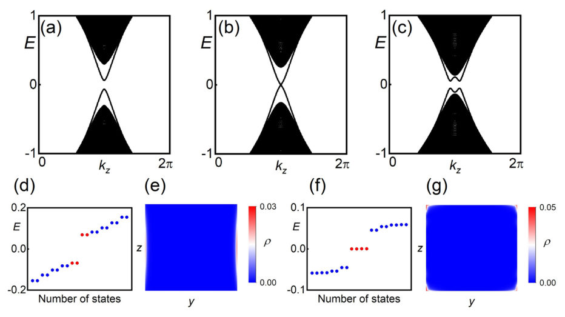
<figcaption class="paper-figure-caption"><b>Fig 5.</b> FIG. 5. Energy spectral evolution and real-space distribution of MZMs. (a)–(c) BdG energy spectra with periodic boundary conditions along z and open boundary conditions in the x-y plane for a 2×80 cross section, at µ = 0.1, 0.17, and 0.3, respectively. The gap closes near the transition point (b) and reopens for larger µ (c). (d) Energy spectrum under open boundary conditions for the parameters in (a) with system size 2×80×80. Red points mark the low-energy states used in (e). (e) Density projected along the thin x direction for the marked states in (d). (f) Energy spectrum of under the open boundary conditions for the parameters in (c), where four MZMs appear inside the superconducting...</figcaption>
</figure>
</div>

<p><strong>Summary.</strong> The paper presents a theoretical design to create multiple Majorana zero modes (MZMs) by coupling chiral hinge states from a higher-order topological insulator (HOTI) with an s-wave superconductor. By reducing the system dimensionality, opposite hinge states form helical channels, and superconducting pairing opens a gap, localizing four robust MZMs at the corners of the sample.</p>
<p><strong>Why it may be interesting.</strong> This work provides a concrete, material-agnostic theoretical blueprint for engineering multiple MZMs using established superconducting techniques on advanced topological materials, bridging HOTI physics with superconductivity.</p>
<details>
<summary>Detailed structure</summary>
<p><strong>Main problem.</strong> The work proposes a theoretical route to realize spatially separated Majorana zero modes (MZMs) by exploiting the boundary physics of higher-order topological insulators (HOTIs). This is achieved through proximity coupling with an s-wave superconductor in a quasi-two-dimensional geometry.</p>
<p><strong>Main result.</strong> The model successfully predicts the formation of four localized MZMs at the corners, characterizing the system as a second-order topological superconductor. These corner modes are shown to be robust against weak to moderate disorder.</p>
<p><strong>Method.</strong> The study employs theoretical modeling using the Bogoliubov-de-Gennes (BdG) Hamiltonian and analyzes spectral properties under varying boundary conditions and disorder strengths.</p>
<p><strong>Model / system.</strong> The system is a chiral HOTI, which hosts gapless hinge states in 3D. By confining it quasi-2D, opposite chiral hinge states hybridize into helical channels. Superconducting proximity effect induces effective p-wave pairing on these channels, leading to the topological superconducting state.</p>
<p><strong>Key observables.</strong> Zero-bias conductance peaks (STM signature), localized MZMs at corners, and the spectral gap opening in the BdG spectrum.</p>
<p><strong>Important parameters / regimes.</strong> The confinement direction ($x$), the chemical potential ($\mu$) tuned into reconstructed hinge bands, and the superconducting pairing strength ($\Delta$).</p>
<p><strong>Assumptions / limitations.</strong> The analysis assumes that the chiral HOTI can be realized and that the proximity effect induces effective p-wave pairing. Robustness is confirmed only against weak-to-moderate disorder.</p>
<p><strong>Figures summary.</strong> Figures illustrate gapless hinge states in 3D, the formation of helical channels upon confinement, and BdG spectra showing the emergence of four localized MZMs at the corners when tuned into the topological superconducting phase.</p>
<p><strong>Paper structure.</strong> The paper builds from identifying gapless hinge states in a 3D HOTI to analyzing their hybridization in a quasi-2D geometry. The core mechanism involves proximity coupling inducing p-wave pairing, which opens a topological gap and localizes MZMs at the boundaries (corners). Disorder robustness is confirmed last.</p>
</details>
<details>
<summary>Abstract</summary>
<p>Majorana zero modes (MZMs) in topological superconductors have attracted broad research interest for their potential applications in topological quantum computation. In this work, we propose a quasi-two-dimensional route to realize spatially separated MZMs in a chiral higher-order topological insulator (HOTI) proximitized by a conventional $s$-wave superconductor through a theoretical model study. In three dimensions, the chiral HOTI hosts gapless hinge states along the $z$ direction, arising from a mass term that anisotropically gaps the surface Dirac cones of a topological insulator. By confining the sample along the $x$ direction while keeping it extended along $y$ and finite along $z$, opposite $z$-directed chiral hinge states hybridize and effectively form one-dimensional helical channels. Incorporating the superconducting proximity effect into this quasi-two-dimensional system induces effective $p$-wave pairing in these helical channels, thereby opening a topological gap. A fully open-boundary sample then hosts four localized MZMs, one at each endpoint of the helical channels, realizing a second-order topological superconductor characterized by Majorana corner modes. In addition to MZMs, we also find that superconducting pairing in this model produces extended Majorana hinge modes in three dimensions. Furthermore, representative disorder calculations indicate that these Majorana corner modes are robust against weak-to-moderate disorder, provided the excitation gap remains open. These results establish finite-size-coupled chiral hinge states as a promising platform for engineering multiple MZMs via conventional superconducting proximity effect.</p>
</details>
<p><sub><a href="#top">↑ back to top</a></sub></p>

<p><a id="paper-2607.03938"></a></p>
<h3 id="on-the-structure-of-black-hole-interior-in-a-model-of-scalar-quasi-particles-within-the-gr-framework"><a href="http://arxiv.org/abs/2607.03938v1">On the structure of black hole interior in a model of scalar quasi-particles within the GR framework</a></h3>
<p><strong>Authors:</strong> S. Bondarenko<br>
<strong>Type:</strong> theory · <strong>Category:</strong> statistical mechanics · <strong>PDF:</strong> <a href="https://arxiv.org/pdf/2607.03938v1">https://arxiv.org/pdf/2607.03938v1</a><br>
<strong>Analysis basis:</strong> full PDF text, analyzed in chunks
<strong>Topic relevance:</strong> <code>non-equilibrium dynamics</code> <strong>2/5</strong> · <code>Keldysh / 2PI / non-Gaussian methods</code> <strong>1/5</strong> · <code>driven-dissipative phase transition</code> <strong>1/5</strong> · <code>non-equilibrium universality</code> <strong>1/5</strong></p>
<div class="figure-strip-hint">↔ Scroll figures horizontally</div>
<div class="paper-figures-scroll">
<figure class="paper-figure-card">

<figcaption class="paper-figure-caption"><b>Fig 1.</b> FIG. 1. Schematic structure of the proposed black hole interior. The radial ordering is R−&lt; R+ &lt; RS: the inner AdS-like core with negative energy density (ρ &lt; 0, p &gt; 0) and its boundary-core shell are enclosed within R−; the transition layer (the ”factory”), which approximately coincides with the zero-gravity hypersurface Z : r = R+, attracts the regular matter from both sides and repels the negative-energy bubbles; the thermal positive-energy crust (V = 0) fills the region up to the Schwarzschild horizon at RS = 2 G MADM.</figcaption>
</figure>
<figure class="paper-figure-card">

<figcaption class="paper-figure-caption"><b>Fig 2.</b> FIG. 2. The scalar self-interaction potential V (ϕ) of Eq. (3), plotted at m = M = 1 (with ϕ in units of M and V in units of m2M 2). The quasi-stable minimum at ϕ = 0 with V = 0 corresponds to the crust; the two symmetric negative minima at ±ϕ0 with V &lt; 0 correspond to the negative-energy boundary core region; the barrier separating the wells is associated with the transition layer (”factory”).</figcaption>
</figure>
<figure class="paper-figure-card">

<figcaption class="paper-figure-caption"><b>Fig 3.</b> FIG. 3. (a) Defect ratio δ = Rreg/R3L versus the density contrast ρcrust/ρcr, for several core fractions u = Rcore/R3L; the cube-root scaling and the δ = 1 reference (dashed) are shown. (b) The regular-BH match locus in the (u, ρcrust/ρcr) plane, separating the over-compact region (δ &gt; 1, R3L &lt; RS) from the defective/puffy region (δ &lt; 1, R3L &gt; RS).</figcaption>
</figure>
</div>

<p><strong>Summary.</strong> This paper proposes an effective, singularity-free model for black hole interiors using a scalar field description that results in three distinct layers: a core, a transition layer, and a crust. It treats the entire process of black hole formation and evaporation as a quasi-static thermodynamic cycle driven by negative energy within the core. The analysis relies heavily on solving Einstein equations and applying advanced concepts from statistical mechanics to describe matter states.</p>
<p><strong>Why it may be interesting.</strong> While focused on GR/BH physics, the core concept of modeling BH evaporation as a quasi-static, adiabatic thermodynamic engine—where negative energy acts as the working substance—draws strong parallels to non-equilibrium statistical mechanics treatments of open quantum systems.</p>
<details>
<summary>Detailed structure</summary>
<p><strong>Main problem.</strong> To construct an effective, singularity-free model for the interior of a black hole by treating its structure as a thermodynamic system.</p>
<p><strong>Main result.</strong> The black hole interior is modeled as a three-layered structure (core, transition layer, crust) whose evolution mimics a quasi-static, almost adiabatic thermodynamic engine cycle.</p>
<p><strong>Method.</strong> Solving static Einstein equations and applying WKB approximations to derive the energy-momentum tensor components for the various matter layers.</p>
<p><strong>Model / system.</strong> The model uses an effective scalar field with non-linear self-interaction potential to describe a three-layer black hole interior: a negative energy AdS core, a transition layer, and a positive-energy quasi-particle crust.</p>
<p><strong>Key observables.</strong> Metric functions, mass functions $m(r)$, energy densities ($
ho$), pressures ($p_r, p_\perp$), and the active Komar mass $M_{	ext{Komar}}(r)$.</p>
<p><strong>Important parameters / regimes.</strong> Negative inverse temperature parameter ($eta$) governing the core condensate; quasi-particle density; Schwarzschild radius $2GM_{	ext{ADM}}$.</p>
<p><strong>Assumptions / limitations.</strong> The system is treated as a static problem initially, and the process of formation/evaporation is modeled as an almost adiabatic thermodynamic cycle.</p>
<p><strong>Figures summary.</strong> Figures schematically illustrate the radial ordering of the three layers ($R_- < R^+ < R_S$) and show the scalar self-interaction potential $V(\phi)$ across these regions.</p>
<p><strong>Paper structure.</strong> The paper progresses by defining the physical system, deriving components using WKB approximations for the crust (leading to an isotropic EoS), analyzing stability near the null-gravity transition layer ($R^+$) via test particle motion, and finally framing the entire structure within a thermodynamic cycle analogy.</p>
</details>
<details>
<summary>Abstract</summary>
<p>We propose an effective, singularity-free model of the black hole interior described entirely by a scalar field with a non-linear self-interaction potential. The interior consists of three layers -- a core, a transition layer, and a crust -- each fixed by the local quasi-particle density and the corresponding extremum of the potential of the field. The crust is a layer of massive, positive-energy thermal excitations above the zero-potential well, beneath a genuine Schwarzschild horizon at $r = 2GM_{\rm ADM}$. The core is an AdS-type region of negative energy density, it simulates a condensate of quasi-particles which carry zero classical kinetic energy and form a negative potential well governed by a negative inverse temperature parameter. The two regions are joined through Israel matching across the transition layer, which sits at an approximately null-gravity hypersurface of maximal regular matter density and where both the sign of the energy density and the type of thermal excitations change. Solving the static Einstein equations, we obtain the metric and mass functions of each layer, the edge equation of state of the crust, the linear stability condition of the null-gravity surface for ordinary and effectively negative mass matter, and the two-temperature thermodynamics linking the kinetic excitations to the negative temperature ground state. The framework unifies core and crust within a single field description and highlights the role of the negative energy AdS core and the associated negative temperature notion in describing black hole interior. In this picture the formation and Hawking evaporation of a black hole appear as a quasi-static cycle of an almost adiabatic thermodynamic engine, with the negative energy core as the working substance.</p>
</details>
<p><sub><a href="#top">↑ back to top</a></sub></p>

<p><a id="paper-2607.03823"></a></p>
<h3 id="janus-mgalb_2-mbene-a-dipole-engineered-anode-for-ultrafast-li-ion-transport-and-exceptional-lithium-storage"><a href="http://arxiv.org/abs/2607.03823v1">Janus MgAlB_2 MBene: a dipole-engineered anode for ultrafast Li-ion transport and exceptional lithium storage</a></h3>
<p><strong>Authors:</strong> Pritam Samanta, Sashank Kumar Pandey, Amit Kumar Jana, Prakash Parida<br>
<strong>Type:</strong> theory · <strong>Category:</strong> other · <strong>PDF:</strong> <a href="https://arxiv.org/pdf/2607.03823v1">https://arxiv.org/pdf/2607.03823v1</a><br>
<strong>Analysis basis:</strong> full PDF text, analyzed in chunks
<strong>Topic relevance:</strong> <code>analog quantum simulation</code> <strong>1/5</strong> · <code>driven-dissipative phase transition</code> <strong>1/5</strong> · <code>methods for driven-dissipative</code> <strong>1/5</strong> · <code>non-equilibrium dynamics</code> <strong>1/5</strong></p>
<div class="figure-strip-hint">↔ Scroll figures horizontally</div>
<div class="paper-figures-scroll">
<figure class="paper-figure-card">

<figcaption class="paper-figure-caption"><b>Fig 1.</b> Fig. 1 Top and side views of (a) Mg2B2, (b) Al2B2, and (c) MgAlB2 with upper (Mg- surface) and lower surface (Al-surface).</figcaption>
</figure>
<figure class="paper-figure-card">
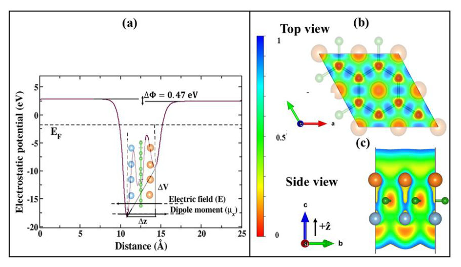
<figcaption class="paper-figure-caption"><b>Fig 2.</b> Fig. 2 (a) Average electrostatic potential of Janus MgAlB2 along the z-axis, (b) top view and (c) side view of ELF map of Janus MgAlB2.</figcaption>
</figure>
<figure class="paper-figure-card">

<figcaption class="paper-figure-caption"><b>Fig 3.</b> Fig. 3 (a) Phonon dispersion spectra of the pristine Janus MgAlB2 along the high symmetry directions, and (b) phonon density of states with average phonon band center weighted over total phonon density of states (DOS).</figcaption>
</figure>
<figure class="paper-figure-card">

<figcaption class="paper-figure-caption"><b>Fig 4.</b> Fig. 4: Total and lithium-projected phonon DOS of single adsorbed Janus MgAlB2 (a) at S1- site on the Mg surface, and (b) at S4-site on the Al surface, respectively.</figcaption>
</figure>
<figure class="paper-figure-card">
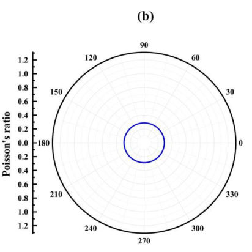
<figcaption class="paper-figure-caption"><b>Fig 5.</b> Fig. 5 Direction dependent variations of (a) Young&#x27;s modulus, Y(𝜃), and (b) Poisson&#x27;s ratio, ν(𝜃), for the Janus MgAlB2 monolayer.</figcaption>
</figure>
</div>

<p><strong>Summary.</strong> This theoretical study proposes a dipole-engineered Janus MgAlB2 monolayer as a superior anode material for Li-ion batteries. By breaking structural symmetry, the material generates an intrinsic polarization that significantly lowers the lithium diffusion barrier and increases storage capacity compared to its symmetric counterparts. The work establishes intrinsic polarization as a powerful design principle for next-generation energy materials.</p>
<p><strong>Why it may be interesting.</strong> While focused on solid-state electrochemistry, the concept of engineering an intrinsic electric field via structural asymmetry (Janus effect) to control charge transport kinetics is analogous to designing quantum interfaces or controlling local potentials in AMO systems.</p>
<details>
<summary>Detailed structure</summary>
<p><strong>Main problem.</strong> The research addresses the need for novel, high-performance anode materials for Li-ion batteries that overcome the capacity limitations of conventional anodes.</p>
<p><strong>Main result.</strong> The dipole-engineered Janus MgAlB2 monolayer exhibits exceptional performance, achieving a high theoretical specific capacity (1470.24 mAh/g) with ultrafast Li ion transport due to its intrinsic polarization.</p>
<p><strong>Method.</strong> First-principles calculations using DFT were employed to model the electronic structure, electrochemical properties, and ion diffusion kinetics of the proposed material.</p>
<p><strong>Model / system.</strong> The system is a Janus MgAlB2 monolayer, engineered by breaking the symmetry of parent MBenes structures (Mg2B2 or Al2B2) through Al substitution. This asymmetry generates a permanent out-of-plane polarization and built-in electric field.</p>
<p><strong>Key observables.</strong> Low Li diffusion barrier (17.1 meV), high theoretical specific capacity (1470.24 mAh/g), dipole moment, and intrinsic polarization magnitude.</p>
<p><strong>Important parameters / regimes.</strong> Room-temperature diffusion coefficient ($3.43	imes10^{-10} 	ext{ cm}^2/	ext{s}$), volume expansion ($\le 3.7\%$), and the built-in electric field strength.</p>
<p><strong>Assumptions / limitations.</strong> The calculations assume that intrinsic polarization can be utilized as a design parameter to regulate both the thermodynamics (storage capacity) and kinetics (ion transport) of lithium storage.</p>
<p><strong>Figures summary.</strong> Figures illustrate optimized geometries, electronic structure analysis (PDOS/Band Structure), charge transfer mapping (EDD plots), and calculated diffusion pathways/barriers for Li ion movement.</p>
<p><strong>Paper structure.</strong> The paper progresses by identifying the limitations of symmetric MBenes, proposing the Janus structure to induce polarization, and then using DFT calculations to quantify how this intrinsic dipole enhances Li adsorption capacity and accelerates ion diffusion compared to pristine materials.</p>
</details>
<details>
<summary>Abstract</summary>
<p>In this work, we propose a group II/IIIA-based Janus MBene, MgAlB_2, and investigate its electrochemical properties using first-principles calculations. The substitution of one Mg layer in Mg_2B_2 MBene by an Al layer breaks the structural symmetry and generates a permanent out-of-plane polarization, giving rise to a distinct electronic environment compared with the parent Mg_2B_2 and Al_2B_2 monolayers. Electronic-structure analysis reveals enhanced orbital hybridization among B, Mg, and Al states near the Fermi level, resulting in improved electronic delocalization across the monolayer. The Janus MgAlB_2 monolayer is found to possess excellent dynamical, mechanical, and thermal stability. Owing to its polarization-modified energy landscape, Li ions migrate with an exceptionally low diffusion barrier of 17.1 meV, corresponding to a room-temperature diffusion coefficient of 3.43x10^-10 cm^2/s. Unlike the pristine Mg_2B_2 and Al_2B_2 monolayers, which support only a single stable adsorption layer, MgAlB_2 accommodates two complete Li layers. Detailed analysis shows that the residual polarization retained after first-layer lithiation continues to promote Li adsorption, whereas increasing Li-Li electrostatic interactions eventually limit further storage. As a result, the Janus monolayer delivers a high theoretical specific capacity of 1470.24 mAh/g together with a small volume expansion of only 3.7% during maximum lithiation. The present study demonstrates that intrinsic polarization can be utilized to regulate both the thermodynamics and kinetics of Li storage, providing a design strategy for high-rate and high-capacity two-dimensional electrode materials.</p>
</details>
<p><sub><a href="#top">↑ back to top</a></sub></p>

<p><a id="paper-2607.03706"></a></p>
<h3 id="correlated-electron-theory-of-triplet-triplet-multiexciton-states-in-polypentacene"><a href="http://arxiv.org/abs/2607.03706v1">Correlated-Electron Theory of Triplet-Triplet Multiexciton States in Polypentacene</a></h3>
<p><strong>Authors:</strong> Rupali Jindal, Alok Shukla, Sumit Mazumdar<br>
<strong>Type:</strong> theory · <strong>Category:</strong> strongly correlated electrons · <strong>PDF:</strong> <a href="https://arxiv.org/pdf/2607.03706v1">https://arxiv.org/pdf/2607.03706v1</a><br>
<strong>Analysis basis:</strong> full PDF text, analyzed in chunks
<strong>Topic relevance:</strong> <code>analog quantum simulation</code> <strong>1/5</strong> · <code>correlated cavity matter</code> <strong>1/5</strong> · <code>non-equilibrium dynamics</code> <strong>1/5</strong></p>
<div class="figure-strip-hint">↔ Scroll figures horizontally</div>
<div class="paper-figures-scroll">
<figure class="paper-figure-card">

<figcaption class="paper-figure-caption"><b>Fig 1.</b> FIG. 2. Pentacene tetramer 4Pc with the anti-anti-anti inter- monomer bonding motif.</figcaption>
</figure>
<figure class="paper-figure-card">
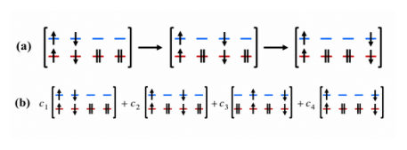
<figcaption class="paper-figure-caption"><b>Fig 2.</b> FIG. 1. Schematics of two different conceptualizations of triplet-triplet eigenstates of 4Pc (see text). Red and blue horizontal bars correspond to HOMO and LUMO of Pc monomers, doubly or singly occupied by electrons. Arrows on singly occupied MOs indicate electron spins. Bonding (antibonding) MOs not shown are completely filled (empty). (a) Individual configurations are eigenstates, and triplet sep- aration occurs along the indicated path. (b) Eigenstates are quantum superpositions of configurations with different rela- tive weights ci.</figcaption>
</figure>
<figure class="paper-figure-card">
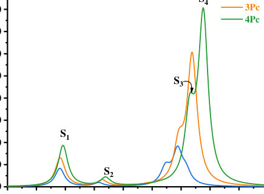
<figcaption class="paper-figure-caption"><b>Fig 3.</b> FIG. 3. Calculated ground state absorption spectra of nPc, n = 2-4. Si, i=1-4, label the different absorption bands (see Fig. 4)</figcaption>
</figure>
<figure class="paper-figure-card">
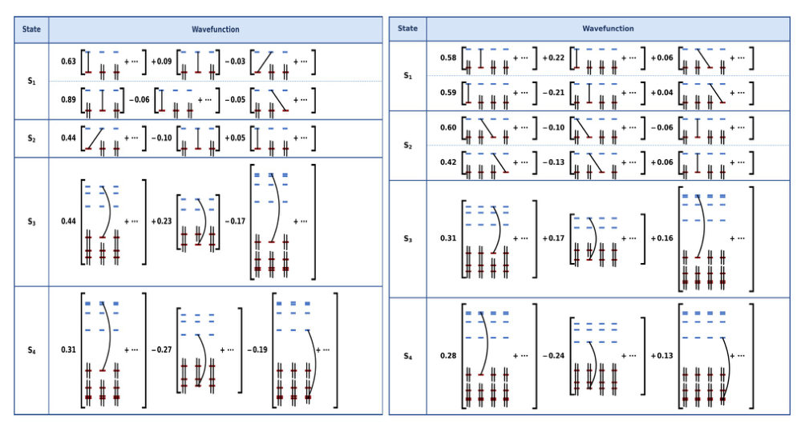
<figcaption class="paper-figure-caption"><b>Fig 4.</b> FIG. 4. Normalized exciton basis wavefunctions of final eigenstates to which ground state absorption occurs in 3Pc (left) and 4Pc (right). S1 - S4 correspond to the absorption bands labeled in Fig. 3. Red and blue horizontal bars represent bonding and antibonding MOs, respectively, which can be doubly or singly occupied by electrons. Straight or curved lines connecting MOs represent spin-singlet excitations. Ellipses correspond to configurations related by spatial and charge-conjugation symmetries. Filled (empty) bonding (antibonding) MOs are not shown.</figcaption>
</figure>
<figure class="paper-figure-card">
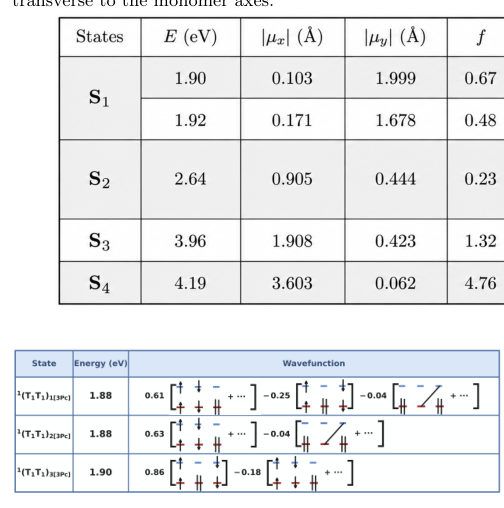
<figcaption class="paper-figure-caption"><b>Fig 5.</b> FIG. 5. 1(T1T1) eigenstates of 3Pc.</figcaption>
</figure>
</div>

<p><strong>Summary.</strong> The authors perform advanced correlated-electron calculations on pentacene oligomers to characterize triplet-triplet multiexciton states. They demonstrate that these states are not localized pairs but rather delocalized quantum superpositions of multiple configurations. This theoretical finding resolves discrepancies regarding intramolecular triplet diffusion and suggests alternative pathways for energy dissipation in polymeric materials.</p>
<p><strong>Why it may be interesting.</strong> This work directly addresses the complex many-body dynamics in organic semiconductors, providing a detailed electronic structure explanation for excited state behavior that goes beyond simple localized models, which is crucial for understanding energy transfer mechanisms relevant to quantum optics and materials science.</p>
<details>
<summary>Detailed structure</summary>
<p><strong>Main problem.</strong> The study aims to determine the true nature of triplet-triplet multiexciton states in polypentacene oligomers: whether they are localized nearest-neighbor pairs or delocalized quantum superpositions.</p>
<p><strong>Main result.</strong> The eigenstates are found to be complex quantum superpositions involving all accessible intertriplet separations, which explains the observed lack of simple intramolecular triplet diffusion.</p>
<p><strong>Method.</strong> Correlated-electron calculations using the Pariser-Parr-Pople (PPP) Hamiltonian solved via Multiple Reference Singles and Doubles Configuration Interaction (MRSDCI).</p>
<p><strong>Model / system.</strong> The system models are three- and four-unit pentacene oligomers, serving as microscopic representations for polypentacene. The calculations utilize a molecular exciton basis that explicitly separates Frenkel, charge-transfer, and triplet-pair configurations.</p>
<p><strong>Key observables.</strong> Energy levels of $1(T_1T_1)$ eigenstates, absorption spectra (ESAs), and transient absorption (TA) features, particularly the signal at 710 nm.</p>
<p><strong>Important parameters / regimes.</strong> The calculations fix parameters like the onsite Hubbard repulsion U = 6.7 eV and use a molecular exciton basis derived from frontier MOs.</p>
<p><strong>Assumptions / limitations.</strong> Key limitations include the exclusion of electron-vibration interactions and the reliance on the semiempirical PPP Hamiltonian.</p>
<p><strong>Figures summary.</strong> Figures schematically contrast localized vs. delocalized models for eigenstates, show the $4	ext{Pc}$ structure, and illustrate intermonomer Charge Transfer (CT) channels responsible for observed ESA peaks.</p>
<p><strong>Paper structure.</strong> The paper develops by first establishing the theoretical framework using MRSDCI on PPP Hamiltonian; it then calculates and analyzes the resulting multiexciton eigenstates, comparing these predictions against experimental TA measurements to deduce the physical nature of triplet interactions.</p>
</details>
<details>
<summary>Abstract</summary>
<p>We present correlated-electron calculations of optical spin-singlet and triplet-triplet multiexciton states in three- and four-unit pentacene oligomers as microscopic models for polypentacene. The calculations use the Pariser-Parr-Pople Hamiltonian, multiple-reference singles and doubles configuration interaction, and a molecular exciton basis that resolves Frenkel, charge-transfer, and triplet-pair (T1T1) configurations in real space. We find that the complete set of 1(T1T1) eigenstates lies in a narrow, nearly degenerate energy window near the lowest optical exciton and that no eigenstate can be identified with a single localized triplet-pair configuration. Instead, each triplet-pair eigenstate is a quantum superposition of configurations containing all accessible intertriplet separations. This electronic structure explains the perceived absence of intramolecular triplet diffusion in pentacene oligomers, polypentacene, and polytetracene solutions, while leaving open the possibility of intermolecular singlet fission in films with appreciable interchain interactions.</p>
</details>
<p><sub><a href="#top">↑ back to top</a></sub></p>

<p><a id="paper-2607.04757"></a></p>
<h3 id="on-the-math1554math-channel-noise-in-inp-hemts-from-4-k-to-300-k"><a href="http://arxiv.org/abs/2607.04757v1">On the $\mathrm{In_{x}Ga_{1-x}As}$ channel noise in InP HEMTs from 4 K to 300 K</a></h3>
<p><strong>Authors:</strong> Junjie Li, Justin H. Chen, Austin J. Minnich, Jan Grahn<br>
<strong>Type:</strong> experiment · <strong>Category:</strong> other · <strong>PDF:</strong> <a href="https://arxiv.org/pdf/2607.04757v1">https://arxiv.org/pdf/2607.04757v1</a><br>
<strong>Analysis basis:</strong> full PDF text, analyzed in chunks
<strong>Topic relevance:</strong> <code>correlated / nonlocal dissipation</code> <strong>1/5</strong> · <code>methods for driven-dissipative</code> <strong>1/5</strong> · <code>non-equilibrium dynamics</code> <strong>1/5</strong></p>
<div class="figure-strip-hint">↔ Scroll figures horizontally</div>
<div class="paper-figures-scroll">
<figure class="paper-figure-card">
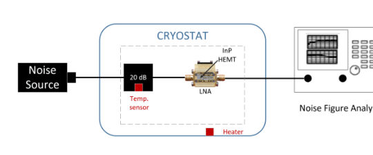
<figcaption class="paper-figure-caption"><b>Fig 1.</b> Fig. 1. Schematic of the cryogenic noise measurement setup using an LNA module equipped with the InP HEMTs. The LNA is cooled to a temperature between 4 and 40 K inside a cryostat.</figcaption>
</figure>
<figure class="paper-figure-card">
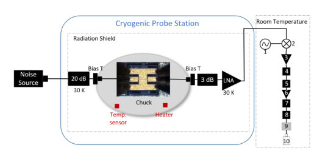
<figcaption class="paper-figure-caption"><b>Fig 2.</b> Fig. 2. Schematic of the on-wafer noise measurement setup in a cryogenic probe station. The InP HEMT is probed on-wafer at temperatures from 40 to 300 K. The room-temperature measurement chain consists of (1) HMC-T2100 local oscillator, (2) M1-0220-P mixer, (3)–(4) low-noise amplification and attenuation, (5)–(8) bandpass filters, (9) variable attenuator, and (10) U8481A power sensor.</figcaption>
</figure>
<figure class="paper-figure-card">
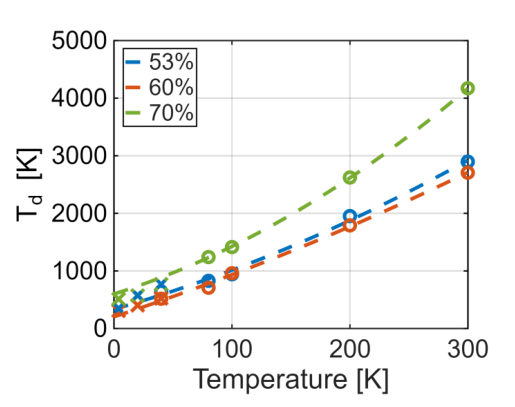
<figcaption class="paper-figure-caption"><b>Fig 3.</b> Fig. 3. Equivalent drain noise temperature Td versus ambient temperature for InP HEMTs with channel indium content of 53%, 60%, and 70%, biased at Vds = 0.5 V and Id = 5 mA. Circles and crosses represent Td values extracted from on-wafer and LNA noise measurements, respectively. Dashed lines are parabolic fits to the on-wafer data above 40 K, extrapolated to 4 K. The absence of on-wafer data below 80 K for the 70% indium channel InP HEMT was due to oscillations occurring during probing.</figcaption>
</figure>
<figure class="paper-figure-card">

<figcaption class="paper-figure-caption"><b>Fig 4.</b> Fig. 5. Thermal noise current PSD Sid,th = 4kBTagds0 versus ambient temperature for InP HEMTs with channel indium content of 53%, 60%, and 70%.</figcaption>
</figure>
<figure class="paper-figure-card">
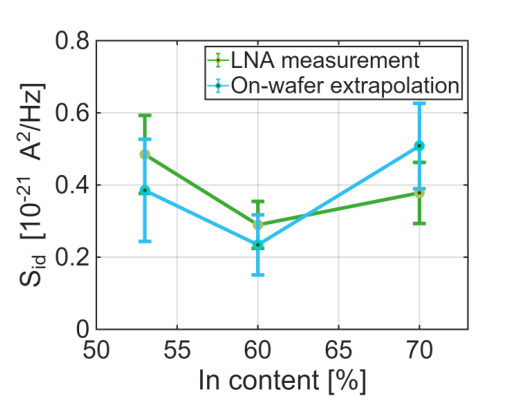
<figcaption class="paper-figure-caption"><b>Fig 5.</b> Fig. 4. Channel current noise spectral density Sid at 4 K as a function of indium content x in InxGa1−xAs channel InP HEMTs. Green points show values extracted from LNA noise measurements. Blue points show values extrapolated to 4 K from the Td model fitted to on-wafer measurements (Fig. 3); Error bars represent the combined measurement uncertainties and fitting errors.</figcaption>
</figure>
</div>

<p><strong>Summary.</strong> This work investigates the temperature dependence and physical origins of channel noise in InP HEMTs used in critical applications like radio astronomy. By measuring noise from 4 K to 300 K, the authors determined that excess noise is dominated by impact ionization and real-space transfer effects, not just simple shot noise. The results guide material optimization by identifying the optimal indium composition (60%) for minimum noise performance.</p>
<p><strong>Why it may be interesting.</strong> While focused on semiconductor device physics rather than fundamental quantum dynamics, understanding noise sources at cryogenic temperatures is crucial for building sensitive quantum measurement devices (like superconducting qubits or detectors) that rely on low-noise amplifiers.</p>
<details>
<summary>Detailed structure</summary>
<p><strong>Main problem.</strong> The study aims to fully characterize the various physical mechanisms responsible for noise generation in InP HEMTs with $\mathrm{In_{x}Ga_{1-x}As}$ channels across a wide temperature range (4 K to 300 K).</p>
<p><strong>Main result.</strong> The excess channel noise at cryogenic temperatures is attributed not only to shot noise but also significantly to impact ionization and real-space transfer noise. The 60% indium content exhibited the lowest overall channel noise.</p>
<p><strong>Method.</strong> Noise was quantified by extracting the equivalent drain noise temperature ($T_d$) using both on-wafer measurements ($\geq 40$ K) and Low Noise Amplifier (LNA)-based cryogenic measurements ($4 	ext{ K} - 40 	ext{ K}$).</p>
<p><strong>Model / system.</strong> The physical system is a 100-nm gate-length InP HEMT utilizing an $\mathrm{In_{x}Ga_{1-x}As}$ channel, tested with varying indium contents ($x=53\%, 60\%, 70\%$). The noise analysis decomposes the total current noise into thermal and excess components.</p>
<p><strong>Key observables.</strong> Equivalent drain noise temperature ($T_d$), channel current noise spectral density ($\mathrm{S}_{id}$), and the excess noise term ($\mathrm{S}_{id,ex}$).</p>
<p><strong>Important parameters / regimes.</strong> Temperature range (4 K to 300 K); Channel indium content ($x$); Bias conditions ($V_{ds} = 0.5 	ext{ V}, I_d = 5 	ext{ mA}$).</p>
<p><strong>Assumptions / limitations.</strong> The analysis assumes the total noise can be separated into thermal and excess components, allowing for the identification of temperature-dependent and independent noise sources.</p>
<p><strong>Figures summary.</strong> Figures illustrate $T_d$ vs. ambient temperature comparing on-wafer and LNA data; $\mathrm{S}_{id}$ at 4 K versus indium content ($x$), demonstrating the minimum excess noise at $x=60\%$.</p>
<p><strong>Paper structure.</strong> The paper systematically measures channel noise across temperatures, decomposes the total noise into thermal and excess parts, analyzes the temperature dependence of these components, and finally attributes the residual excess noise to specific hot-electron effects like impact ionization and RST noise.</p>
</details>
<details>
<summary>Abstract</summary>
<p>The InP high-electron-mobility transistor (HEMT) is indispensable for low-noise amplifiers (LNAs) in radio astronomy and quantum computing. The composition of the $\mathrm{In_{x}Ga_{1-x}As}$ channel in InP HEMT is known to influence the LNA noise performance. However, the various physical mechanisms responsible for noise generation are not fully characterized and understood. Here, we investigate the $\mathrm{In_{x}Ga_{1-x}As}$ channel noise from 4 K to 300 K for 100-nm gate-length InP HEMTs with channel indium content of 53\%, 60\% and 70\%. Channel noise was quantified by extracting the equivalent drain noise temperature $\mathit{T}_{d}$ using both on-wafer and LNA-based measurements, covering 40-300 K and 4-40 K, respectively. The 60\% indium channel InP HEMT exhibited the lowest channel noise across the full temperature range. The $\mathit{T}_{d}$ extracted from on-wafer characterization was found to obey a parabolic temperature dependence which predicted the $\mathit{T}_{d}$ at 4 K for all InP HEMTs in good agreement with LNA-based measurements. By expressing the channel noise as the sum of one thermal and one excess noise term, it was found that the former increased linearly with ambient temperature and dominated at 300 K. The channel noise at 4 K was determined by the excess noise term and exhibited a non-monotonic dependence on the channel indium content in the InP HEMT. The results suggest that the excess noise in the InP HEMT originates not only from temperature-independent shot noise but also from impact ionization and real-space transfer noise.</p>
</details>
<p><sub><a href="#top">↑ back to top</a></sub></p>

<p><a id="paper-2607.04654"></a></p>
<h3 id="quantum-geometric-friedel-oscillations"><a href="http://arxiv.org/abs/2607.04654v1">Quantum Geometric Friedel Oscillations</a></h3>
<p><strong>Authors:</strong> Xing-Lei MA, Jinchao Zhao, Bo-Qing Wu, K. T. Law<br>
<strong>Type:</strong> theory · <strong>Category:</strong> other · <strong>PDF:</strong> <a href="https://arxiv.org/pdf/2607.04654v1">https://arxiv.org/pdf/2607.04654v1</a><br>
<strong>Analysis basis:</strong> full PDF text, analyzed in chunks
<strong>Topic relevance:</strong> <code>Keldysh / 2PI / non-Gaussian methods</code> <strong>1/5</strong> · <code>analog quantum simulation</code> <strong>1/5</strong> · <code>driven-dissipative phase transition</code> <strong>1/5</strong></p>
<div class="figure-strip-hint">↔ Scroll figures horizontally</div>
<div class="paper-figures-scroll">
<figure class="paper-figure-card">

<figcaption class="paper-figure-caption"><b>Fig 1.</b> FIG. 1. Emergence and thermodynamic stability of quan- tum geometric Friedel oscillations (QGFOs) . (a) Schematic band structure in a flat-band metal. The color of the central band represents the quantum metric distribution Gf(k), as zoomed in on the right side. The momentum-space separa- tion between quantum metric hot spots defines the character- istic geometric wavevector qG. The Fermi level (dashed line) cuts through the flat band, with two Fermi points separated by wavevector 2kF . W f and ∆g denotes the flat-band band- width and the band gap, respectively. (b) Normalized real- space density modulations δρnorm(x) ≡δρ(x)/ρ0 induced by a local impurity. At low temperatures (blue curve),...</figcaption>
</figure>
<figure class="paper-figure-card">

<figcaption class="paper-figure-caption"><b>Fig 2.</b> FIG. 2. (a) Band structure of the 1D flat-band model. In- set: Zoom-in of the flat band. The dashed line indicates the Fermi level; 2kF is the zero-temperature scattering wavevec- tor. Parameters are the same as Fig. 1 except δ = 0.05. These parameters are used throughout unless otherwise stated. (b) Quantum distance dk,k′ in the k-k′ plane. The red dashed lines mark the cut q = qG corresponding to the peak of ¯D(q). (c) Fourier transform of the LDOS variations δρnorm(q) for different δ. Solid lines: real-space diagonalization (numerics); dotted lines: full-band formalism in Eq. (2) with T = I (an- alytics). All curves match reasonably well with 1 −¯Df(q). A single impurity U0 = t is placed...</figcaption>
</figure>
<figure class="paper-figure-card">
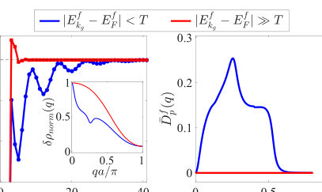
<figcaption class="paper-figure-caption"><b>Fig 3.</b> FIG. 3. (a) Comparison of QGFOs with distinct low-energy quantum geometric structures: Quantum metric hot spots living within (Blue curves) versus far above (Red curves) the smeared Fermi surface. Inset: corresponding Fourier spec- trum. (b) Partially averaged quantum distance ¯Df p(q) for the two regimes. Parameters for the blue curves are the same as Fig. 1 except kBT = Ef F = 0.4t, U0 = 10t, and Λc = 3.5kBT. The red curve has the same parameters as the blue one except t taking a minus sign.</figcaption>
</figure>
<figure class="paper-figure-card">
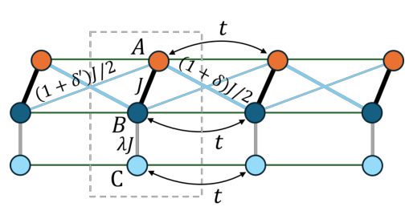
<figcaption class="paper-figure-caption"><b>Fig 4.</b> FIG. 4. Real-space lattice and hopping structure of the 1D model. The dashed square denotes an unit cell.</figcaption>
</figure>
<figure class="paper-figure-card">
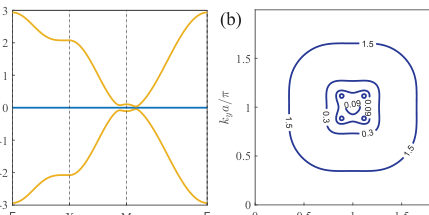
<figcaption class="paper-figure-caption"><b>Fig 5.</b> FIG. 5. (a) Band structure of the 2D model. (b) Fermi surface of the third band. Parameters: J = 1, t = 10−4J, δ′ = 5δ, µ = −0.48W f with bandwidth W f = 8t.</figcaption>
</figure>
</div>

<p><strong>Summary.</strong> This work introduces Quantum Geometric Friedel Oscillations (QGFOs), which arise from the nontrivial quantum geometry inherent in flat bands. Unlike conventional oscillations that vanish at high temperatures, QGFOs persist robustly because their decay length is set by a temperature-independent 'quantum metric length.' Measuring these unique oscillations offers a powerful tool to probe the underlying geometric structure of electronic band theory.</p>
<p><strong>Why it may be interesting.</strong> While focused on condensed matter transport, the concept of geometric protection leading to robust, temperature-independent signatures is highly relevant for understanding coherence in quantum devices or mesoscopic systems where thermal decoherence is a major concern.</p>
<details>
<summary>Detailed structure</summary>
<p><strong>Main problem.</strong> The conventional theory of Friedel oscillations is incomplete when considering Bloch wavefunctions with nontrivial quantum geometry, necessitating the identification of a new oscillation type.</p>
<p><strong>Main result.</strong> Quantum Geometric Friedel Oscillations (QGFOs) exist due to the quantum metric in flat bands; these oscillations persist robustly at high temperatures where conventional oscillations are washed out.</p>
<p><strong>Method.</strong> The analysis involves deriving and comparing susceptibility functions, separating contributions into conventional and quantum geometric parts ($\chi_f = \chi^c_f + \chi^g_f$).</p>
<p><strong>Model / system.</strong> The study focuses on metals exhibiting isolated (nearly) flat bands at the Fermi energy, modeled using tight-binding Hamiltonians in 1D and 2D settings.</p>
<p><strong>Key observables.</strong> Oscillation periods ($2k_F$ vs. $q_G$), decay lengths ($\xi_T$ vs. $\ell_{QM}$), and the normalized LDOS variation $\delta
ho_{	ext{norm}}(q)$.</p>
<p><strong>Important parameters / regimes.</strong> Temperature ($T$), Fermi momentum ($k_F$), flat-band bandwidth ($W_f$), and quantum metric length ($\ell_{QM}$).</p>
<p><strong>Assumptions / limitations.</strong> The analysis often relies on approximations like the Born approximation or high-temperature limits to isolate the geometric contributions.</p>
<p><strong>Figures summary.</strong> Figures illustrate schematic band structures, real-space density modulations showing coexistence/persistence of oscillations, and Fourier spectra highlighting distinct peaks at $2k_F$ and $q_G$.</p>
<p><strong>Paper structure.</strong> The paper builds by first identifying the theoretical incompleteness of conventional theory, then deriving the QGFO susceptibility ($\chi^g$), demonstrating its unique temperature dependence (persistence), and finally quantifying its spatial extent ($\Omega_{	ext{QGFOs}}$) relative to topological invariants.</p>
</details>
<details>
<summary>Abstract</summary>
<p>In conventional Friedel oscillations, the real-space charge density oscillations induced by an impurity are characterized by an oscillation period set by the Fermi momentum. In this work, we show that the conventional theory is incomplete when the Bloch wavefunctions carry nontrivial quantum geometry. We demonstrate that in metals with an isolated (nearly) flat band at the Fermi energy, quantum geometry induces a distinct type of oscillations, which we call the \emph{quantum geometric Friedel oscillations} (QGFOs). The period of the QGFOs is set by the momentum space separation of the quantum metric hot spots of the flat band. The conventional and quantum metric-induced oscillations coexist at low temperatures. At higher temperatures, the conventional Friedel oscillations away from the impurity site are set by the thermal length such that the oscillations can be easily washed out by temperature effects. Remarkably, the QGFOs decay length is set by the quantum metric length which is defined by the integration of the quantum metric of the flat band. As a result, the QGFOs can persist even at temperatures much larger than the bandwidth of the flat band. Moreover, the decay length is independent of temperature for a wide range of temperatures which is a manifestation of the quantum metric protection. In conclusion, we show that the quantum metric induces novel Friedel oscillations. Our work suggests that the measurement of the QGFOs is a powerful way to detect the quantum metric length (which is associated with the integral of the quantum metric) and the quantum metric hot spot separations (which are associated with the distribution of the quantum metric in the momentum space).</p>
</details>
<p><sub><a href="#top">↑ back to top</a></sub></p>

<p><a id="paper-2607.04928"></a></p>
<h3 id="math1589math-phase-diagram-of-cerhmath1590mathasmath1591math-refinement-of-the-parity-switch-scenario"><a href="http://arxiv.org/abs/2607.04928v1">$H-T$ Phase diagram of CeRh$_{2}$As$_{2}$: Refinement of the parity-switch scenario</a></h3>
<p><strong>Authors:</strong> Changhee Lee, P. M. R. Brydon<br>
<strong>Type:</strong> both · <strong>Category:</strong> strongly correlated electrons · <strong>PDF:</strong> <a href="https://arxiv.org/pdf/2607.04928v1">https://arxiv.org/pdf/2607.04928v1</a><br>
<strong>Analysis basis:</strong> full PDF text, analyzed in chunks
<strong>Topic relevance:</strong> <code>Keldysh / 2PI / non-Gaussian methods</code> <strong>1/5</strong> · <code>Kondo &amp; dissipative impurity</code> <strong>1/5</strong></p>
<div class="figure-strip-hint">↔ Scroll figures horizontally</div>
<div class="paper-figures-scroll">
<figure class="paper-figure-card">
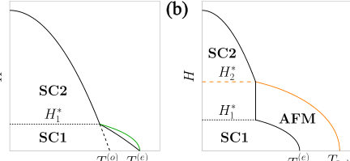
<figcaption class="paper-figure-caption"><b>Fig 1.</b> Figure 1. Schematic field-temperature (H −T) phase dia- grams of CeRh2As2 in magnetic fields along c-axis. (a) Trans- port phase diagram of the superconducting phases. The dot- ted line denotes the first order phase transition occurring at H = H∗ 1 . The dashed line is an extrapolation of the phase boundary in H &gt; H∗ 1 . The green line depicts a fictitious ex- ample of the phase boundary in H &lt; H∗ 1 which is consistent with the usual parity-switch scenario. (b) Thermodynamic phase diagram of the superconducting phases along with the AFM phase. H∗ 2 indicated by the orange dashed line is the critical field above which the AFM order vanishes.</figcaption>
</figure>
<figure class="paper-figure-card">
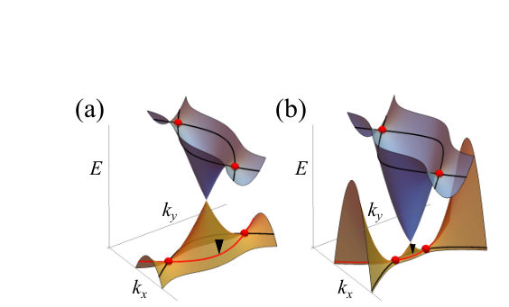
<figcaption class="paper-figure-caption"><b>Fig 2.</b> Figure 2. Fermi surfaces of the conduction and the valence bands. (a) (t⊥, α) = (2, 5)t0 and (b) (t⊥, α) = (5, 2)t0 are used. The red points highlight the Van Hove saddle points. The curves passing through the red points represent the Fermi surfaces of the valence (conduction) band at µ = µv (µ = µc). The black arrows mark the midpoints of the red curves and correspond to the origin of the figures in Fig. 3.</figcaption>
</figure>
<figure class="paper-figure-card">
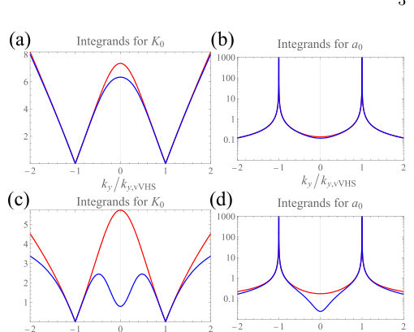
<figcaption class="paper-figure-caption"><b>Fig 3.</b> Figure 3. The integrands of K(p) 0 and a(p) 0 over the Fermi surface (red curve in Fig. 2) for the B1g- and B2u-type gap functions. (a) and (b) show the integrands when (t⊥, α) = (2, 5) and µ = µv in Eq. (7) with a = b = 1. The red (blue) line corresponds to the case with B1g(B2u)-type gap function. (c) and (d) show the integrands when (t⊥, α) = (5, 2) in Eq. (7) with a = b = 1. The Fermi surface is parameterized by using ky. ky,vVHS denotes the position of the valence band Van Hove singularity.</figcaption>
</figure>
<figure class="paper-figure-card">
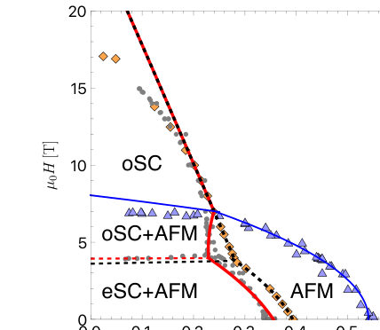
<figcaption class="paper-figure-caption"><b>Fig 4.</b> Figure 5. Phase diagram obtained from Eqs. (14-16). The orange diamonds represent the resistivity measurement in Ref. [8], while the other symbols correspond to the thermo- dynamic data presented in Ref. [10]. The black dashed lines represent the phase boundaries between the normal phase and the eSC and oSC states, and the first order transition line between two SC states in the absence of the AFM or- der. The red and blue lines are the phase boundaries ob- tained by using Eqs. (15-16) which take account of the AFM order. The red dashed line is the first order transition line be- tween two SC states in the presence of the AFM order. Here we use (T (e) c,0 , χ(e) O , χ(e) P ) = (0.393, 0.04,...</figcaption>
</figure>
</div>

<p><strong>Summary.</strong> This paper refines the understanding of superconductivity in CeRh2As2 by addressing conflicts between theory and experiment regarding its H-T phase diagram. The authors demonstrate that complex electronic structure effects, arising from nonsymmorphic symmetries and coexisting antiferromagnetism, are necessary to explain anomalous superconducting behavior observed under magnetic fields.</p>
<p><strong>Why it may be interesting.</strong> While focused on heavy fermions, the detailed analysis of symmetry-enforced electronic structure near singularities (Dirac nodes/VHSs) and the interplay between magnetic ordering and superconductivity provides rich theoretical material relevant to strongly correlated quantum materials research.</p>
<details>
<summary>Detailed structure</summary>
<p><strong>Main problem.</strong> The study aims to reconcile experimental discrepancies in the H-T phase diagram of CeRh2As2—specifically the anomalous initial slope and nearly vertical boundary—with the simple parity-switch superconducting scenario.</p>
<p><strong>Main result.</strong> The authors show that incorporating anisotropic band structure due to nonsymmorphic symmetries explains the steep odd-parity SC slope, while coexisting antiferromagnetism accounts for the near-vertical thermodynamic phase boundary via Pauli depairing suppression.</p>
<p><strong>Method.</strong> The work combines theoretical modeling using a 2D k.p Hamiltonian and Landau free energy formalism with analysis of experimental data from specific heat and resistivity measurements.</p>
<p><strong>Model / system.</strong> The system is the heavy fermion superconductor CeRh2As2, analyzed near the X point in the Brillouin zone boundary using a k.p Hamiltonian that incorporates interlayer hopping and Rashba SOC effects.</p>
<p><strong>Key observables.</strong> H-T phase boundaries for SC and AFM phases; initial slopes of odd/even parity superconducting states ($    ext{oSC}$ vs $  ext{eSC}$).</p>
<p><strong>Important parameters / regimes.</strong> Interlayer hopping amplitude ($t_\perp$), Rashba SOC parameters ($\alpha_x, \alpha_y$), magnetic field ($H$), and temperature ($T$).</p>
<p><strong>Assumptions / limitations.</strong> The standard Ginzburg-Landau theory is insufficient at high fields; the analysis relies on modeling the interplay between SC and AFM orders.</p>
<p><strong>Figures summary.</strong> Figures illustrate schematic H-T phase diagrams showing first-order transitions, and Fermi surface plots highlighting Van Hove saddle points around the X point.</p>
<p><strong>Paper structure.</strong> The paper progresses from identifying experimental inconsistencies with simple models to developing a sophisticated theoretical framework involving anisotropic band structure calculations (k.p model) and phenomenological Landau theory incorporating coexisting AFM order.</p>
</details>
<details>
<summary>Abstract</summary>
<p>The superconductivity of CeRh$_2$As$_2$ has drawn attention due to its first-order transition in magnetic fields. At first glance, the multiple superconducting (SC) phases as well as the first-order transition appear consistent with the parity-switch scenario, which emphasizes the role of strong Rashba spin-orbit coupling enabled by the locally non-centrosymmetric crystal structure. However, experimental phase diagrams exhibit notable deviations from this simple picture: thermodynamic measurements reveal a nearly vertical phase boundary of the high-field SC phase despite the orbital depairing effect, while transport measurements show that the initial slope of the high-field SC phase is steeper than that of the low-field SC phase. Here, we show that these discrepancies can be understood by considering the combined effects of nonsymmorphic band structure and coexisting antiferromagnetic order. We demonstrate that the symmetry-enforced electronic structure around the Dirac node and type-II Van Hove saddle points near the X point in the Brillouin zone boundary becomes more anisotropic with increased interlayer hopping amplitude, and this anisotropic band structure naturally accounts for the anomalous initial slope of the odd-parity SC phase. Meanwhile, a phenomenological theory incorporating coexisting antiferromagnetism explains the nearly vertical thermodynamic phase boundary as a consequence of field-enhanced odd-parity superconductivity enabled by the over-suppression of Pauli depairing.</p>
</details>
<p><sub><a href="#top">↑ back to top</a></sub></p>

<p><a id="paper-2607.05371"></a></p>
<h3 id="dielectric-function-in-wse2"><a href="http://arxiv.org/abs/2607.05371v1">Dielectric function in WSe2</a></h3>
<p><strong>Authors:</strong> Tiberius O. Cheche, Yia-Chung Chang<br>
<strong>Type:</strong> theory · <strong>Category:</strong> strongly correlated electrons · <strong>PDF:</strong> <a href="https://arxiv.org/pdf/2607.05371v1">https://arxiv.org/pdf/2607.05371v1</a><br>
<strong>Analysis basis:</strong> full PDF text, analyzed in chunks
<strong>Topic relevance:</strong> <code>Keldysh / 2PI / non-Gaussian methods</code> <strong>1/5</strong> · <code>analog quantum simulation</code> <strong>1/5</strong></p>
<div class="figure-strip-hint">↔ Scroll figures horizontally</div>
<div class="paper-figures-scroll">
<figure class="paper-figure-card">

<figcaption class="paper-figure-caption"><b>Fig 1.</b> Figure 1: Hexagonal first Brillouin zone of the triangular Wigner-crystal lattice. The irreducible Γ–K–M wedge used for the Brillouin-zone sampling is indicated.</figcaption>
</figure>
<figure class="paper-figure-card">
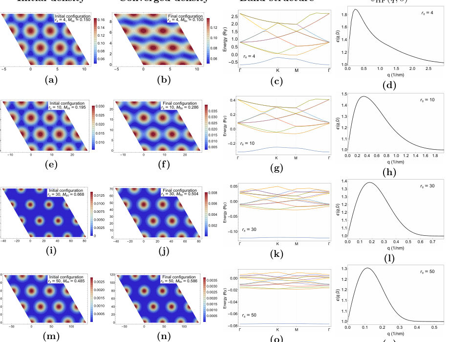
<figcaption class="paper-figure-caption"><b>Fig 2.</b> Figure 2: Evolution of the fully spin-polarized Hartree–Fock Wigner-crystal solution with the density parameter rs. The four rows correspond to rs = 4, 10, 30, and 50, as indicated inside the panels. The columns show, from left to right, the initial charge-density configuration, the converged Hartree–Fock charge density, the same-spin Hartree–Fock band structure along Γ–K–M–Γ, and the static dielectric function εHF(q, 0) along Γ–K direction. The charge-density panels also indicate the first-star order parameter of the initial and converged configurations, denoted by Mini and Mfin, respectively. The sequence illustrates the evolution from a weakly crystalline solution at small rs toward...</figcaption>
</figure>
</div>

<p><strong>Summary.</strong> This paper develops and applies a Hartree-Fock method to calculate the static dielectric function of a Wigner crystal formed in monolayer WSe2. By combining band structure calculations with polarizability theory, it provides a detailed theoretical tool to study electronic screening and charge ordering effects in dilute 2D electron systems.</p>
<p><strong>Why it may be interesting.</strong> While focused on solid-state screening, the use of advanced many-body techniques (HF) to model strongly correlated insulating states like Wigner crystals provides valuable theoretical tools applicable to understanding charge ordering in low-dimensional quantum materials relevant to AMO/optics research.</p>
<details>
<summary>Detailed structure</summary>
<p><strong>Main problem.</strong> The study aims to compute the static dielectric function of a Wigner-crystal state formed within a two-dimensional transition-metal dichalcogenide, specifically monolayer WSe2.</p>
<p><strong>Main result.</strong> The method successfully calculates $\epsilon(\mathbf{q}, 0)$, showing that screening is strongest at a finite momentum $q_{\max}$, which shifts as the electron density decreases.</p>
<p><strong>Method.</strong> A Hartree-Fock numerical method is developed to compute the band structure of the Wigner crystal, and this framework is then used to calculate the static polarizability via an insulating Lindhard-type formula.</p>
<p><strong>Model / system.</strong> The system modeled is a two-dimensional electron gas forming a Wigner crystal in monolayer WSe2. The theory employs a self-consistent Hartree-Fock approach assuming full spin polarization and utilizes plane-wave expansions in the supercell basis.</p>
<p><strong>Key observables.</strong> Static dielectric function $\epsilon(\mathbf{q}, 0)$, single-particle excitation spectra, and the Wigner-crystal order parameter ($M_1$).</p>
<p><strong>Important parameters / regimes.</strong> The dimensionless density parameter $r_s$ (which controls crystal localization), the momentum transfer $q$, and the long-wavelength limit ($q 	o 0$) where $\epsilon(0, 0) = 1$.</p>
<p><strong>Assumptions / limitations.</strong> The ground state is assumed to be fully spin-polarized. The calculations rely on the Hartree-Fock approximation for band structure and use an adapted Lindhard/Stern polarizability formula.</p>
<p><strong>Figures summary.</strong> Figure 1 illustrates the hexagonal first Brillouin zone of the triangular Wigner-crystal lattice and the irreducible $\Gamma–K–M$ wedge used for momentum space sampling.</p>
<p><strong>Paper structure.</strong> The paper develops from general Wigner crystal theory to solving the self-consistent Hartree-Fock equations in a plane-wave basis, culminating in the calculation of the static dielectric function using the resulting band structure and polarizability formalism.</p>
</details>
<details>
<summary>Abstract</summary>
<p>We develop a Hartree-Fock numerical method for computing the band structure of a two-dimensional Wigner crystal in an electron gas at zero temperature. The ground state is assumed to be fully spin-polarized. Single-particle excitation spectra are evaluated in spin-conserving channel. As an application, we use the developed code to compute the static dielectric function epsilon(q,0) of a Wigner-crystal state formed in a two-dimensional transition-metal dichalcogenide, specifically monolayer WSe2. The dielectric response is obtained from the Hartree-Fock band structure and eigenfunctions through a static Lindhard-type polarizability. The method provides a theoretical tool for investigating screening, band-structure reconstruction, and interaction effects in low-density two-dimensional systems, with possible relevance for future experimental studies.</p>
</details>
<p><sub><a href="#top">↑ back to top</a></sub></p>

<p><a id="paper-2607.04104"></a></p>
<h3 id="vortex-number-controlled-josephson-diode-polarity-in-corbino-junctions"><a href="http://arxiv.org/abs/2607.04104v1">Vortex-Number-Controlled Josephson Diode Polarity in Corbino Junctions</a></h3>
<p><strong>Authors:</strong> Linghao Huang, Jing Wang<br>
<strong>Type:</strong> theory · <strong>Category:</strong> other · <strong>PDF:</strong> <a href="https://arxiv.org/pdf/2607.04104v1">https://arxiv.org/pdf/2607.04104v1</a><br>
<strong>Analysis basis:</strong> full PDF text, analyzed in chunks
<strong>Topic relevance:</strong> <code>Keldysh / 2PI / non-Gaussian methods</code> <strong>1/5</strong> · <code>driven-dissipative phase transition</code> <strong>1/5</strong></p>
<div class="figure-strip-hint">↔ Scroll figures horizontally</div>
<div class="paper-figures-scroll">
<figure class="paper-figure-card">
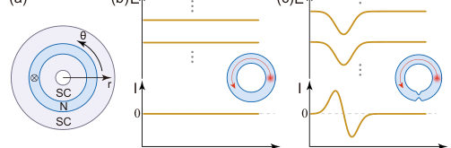
<figcaption class="paper-figure-caption"><b>Fig 1.</b> FIG. 1. Corbino Josephson junction and current-phase re- lation (CPR). (a) Schematic of a Corbino Josephson junc- tion. A perpendicular magnetic field threads the non- superconducting region (N), enclosing a magnetic flux Φ quantized in units of the superconducting flux quantum Φ0 = h/2e. (b) Andreev spectrum and CPR of a homogeneous junction with Φ = Φ0. (c) Corresponding results for an inho- mogeneous junction. The diffuse red spot denotes a Joseph- son vortex, which moves around the annulus as the phase difference ϕ between the inner and outer superconductors is increased.</figcaption>
</figure>
<figure class="paper-figure-card">

<figcaption class="paper-figure-caption"><b>Fig 2.</b> FIG. 2. The Josephson diode polarity and representative in- homogeneous pairing profile ∆(θ). (a) Diode polarity ob- tained from Eq. (9). (b),(c) Two representative examples of ∆(θ) evaluated on a uniform discretization of θ ∈[0, 2π) with 100 grid points. (b) corresponds to the profile defined in Eq. (3) with nc = 60. (c) shows a two-site perturbation profile, in which the pairing amplitude exhibits opposite-sign deviations from the uniform background at two nearly dia- metrically separated grid points (sites 1 and 50).</figcaption>
</figure>
<figure class="paper-figure-card">

<figcaption class="paper-figure-caption"><b>Fig 3.</b> Fig. 2(b) shows this profile sampled on a uniform angu- lar grid, corresponding to the discrete values ∆ni used in the numerics. Its dominant feature is two opposite-sign modulations localized in two nearly diametrically oppo- site angular sectors. Motivated by this structure, we further consider a simplified two-site perturbation pro- file with opposite-sign pairing-amplitude perturbations at two nearly diametrically separated grid sites on the ring [Fig. 2(c)]. This reduced profile introduces only small deviations in φj, which weakly renormalize the harmonic phases but do not affect the vortex-number- controlled alternation of the diode polarity.</figcaption>
</figure>
<figure class="paper-figure-card">
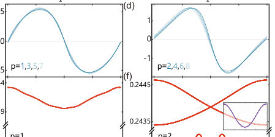
<figcaption class="paper-figure-caption"><b>Fig 4.</b> FIG. 3. Numerical results for effective 1D edge model. (a) Forward and backward critical currents I± c as a function of vortex number p. (b) Corresponding diode polarity η versus p. (c),(d) Current-phase relations for odd and even p, respec- tively. (e),(f) Representative low-energy and quasi-continuum Andreev spectra for p = 1 and p = 2, respectively. The color scale indicates the wavefunction weight on the junc- tion Majorana modes. The inset in (f) shows the sum of the two quasi-continuum branches. Model parameters are v = 1, ∆0 = 0.15, m = 0.6, Ecut = 0.5.</figcaption>
</figure>
<figure class="paper-figure-card">

<figcaption class="paper-figure-caption"><b>Fig 5.</b> FIG. 4. Numerical results for 2D models. Panels (a),(c) show the forward and backward critical currents I± c and diode po- larity η, respectively, for a non-topological Corbino Josephson junction. The model parameters are W = 400, L = 2, t = 20, µ = 10, ∆= 1, nc = 300. Panels (b),(d) show the corresponding results for a topological junction. The model parameters are W = 300, L = 2, t = 300, M0 = 20, M1 = 300, mz = 20, µ = 5, ∆= 10, nc = 200.</figcaption>
</figure>
</div>

<p><strong>Summary.</strong> This theoretical paper demonstrates that the diode polarity in Josephson junctions can be controlled by the vortex number ($p$) simply through structured spatial inhomogeneity. By analyzing the Andreev spectrum and deriving harmonic selection rules, the authors show this effect is a generic consequence of geometry rather than exclusively requiring topological superconductivity.</p>
<p><strong>Why it may be interesting.</strong> The work provides a general mechanism for controlling superconducting junction properties using geometric structure, decoupling the observation of parity dependence from the necessity of exotic topological physics like Majorana fermions.</p>
<details>
<summary>Detailed structure</summary>
<p><strong>Main problem.</strong> To determine if vortex-parity-dependent Josephson diode polarity reversal is a unique signature of Majorana physics or if it can emerge from generic, non-topological mechanisms.</p>
<p><strong>Main result.</strong> Structured spatial inhomogeneity in Corbino junctions provides a universal, non-topological route for achieving vortex-parity-dependent control over the Josephson diode effect's sign.</p>
<p><strong>Method.</strong> The authors used continuum Andreev spectral theory and perturbation methods to derive harmonic selection rules governing how structural inhomogeneities modulate the current-phase relation.</p>
<p><strong>Model / system.</strong> The study analyzes Corbino Josephson junctions, modeled using a continuum Andreev Hamiltonian incorporating spatial inhomogeneity $\Delta(	heta)$. The analysis extends from 1D edge models to full 2D lattice simulations.</p>
<p><strong>Key observables.</strong> Josephson diode polarity ($\eta$), critical currents ($I_{\pm c}$), and the relative phases of higher-order Josephson current harmonics.</p>
<p><strong>Important parameters / regimes.</strong> Vortex number ($p = \Phi/\Phi_0$), degree of spatial inhomogeneity ($\delta\Delta(	heta)$), and the ratio of modulation strength to gap $\delta\Delta / \Delta_0$.</p>
<p><strong>Assumptions / limitations.</strong> The analysis relies on the weak modulation limit ($\delta\Delta \ll \Delta_0$) and assumes specific functional forms for the current-phase relation harmonics.</p>
<p><strong>Figures summary.</strong> Figures illustrate schematic junction geometries, the dependence of diode polarity on vortex number, and comparisons between results obtained from topological versus non-topological models.</p>
<p><strong>Paper structure.</strong> The paper builds by first establishing the general relationship between current asymmetry and phase differences (Chunk 3), then deriving a harmonic selection rule based on local bound states around vortices (Chunk 4), and finally applying this framework to show that structured inhomogeneity controls diode polarity in both topological and non-topological settings (Chunks 1 &amp; 2).</p>
</details>
<details>
<summary>Abstract</summary>
<p>We demonstrate that the polarity of the Josephson diode effect in Corbino Josephson junctions can be deterministically controlled by the vortex number, which arises as a generic consequence of structured spatial inhomogeneity. By solving the continuum Andreev spectral problem, we identify a mechanism in which the vortex number selectively filters specific spatial Fourier harmonics of the local inhomogeneity. This harmonic selection reshapes the amplitudes and relative phases of higher-order Josephson current harmonics, ultimately reversing the critical-current asymmetry. Numerical simulations of both an effective one-dimensional edge model and full two-dimensional lattice models confirm the robustness of this mechanism. Crucially, our results show that a vortex-parity-dependent reversal of diode polarity is not an exclusive signature of Majorana physics, but can emerge generically from geometric and structural inhomogeneities in Corbino junctions.</p>
</details>
<p><sub><a href="#top">↑ back to top</a></sub></p>

<p><a id="paper-2607.03685"></a></p>
<h3 id="josephson-effects-in-the-spin-triplet-superconductoraltermagnetspin-triplet-superconductor-junctions-the-detection-of-the-intrinsic-math1615math-vector"><a href="http://arxiv.org/abs/2607.03685v1">Josephson effects in the spin-triplet superconductor/altermagnet/spin-triplet superconductor junctions: the detection of the intrinsic $\bf{d}$-vector</a></h3>
<p><strong>Authors:</strong> Ya-Ting Han, Li-Juan Chen, Wen-Ting Liu, Qiang Cheng, Qing-Feng Sun<br>
<strong>Type:</strong> theory · <strong>Category:</strong> strongly correlated electrons · <strong>PDF:</strong> <a href="https://arxiv.org/pdf/2607.03685v1">https://arxiv.org/pdf/2607.03685v1</a><br>
<strong>Analysis basis:</strong> full PDF text, analyzed in chunks
<strong>Topic relevance:</strong> <code>Keldysh / 2PI / non-Gaussian methods</code> <strong>1/5</strong></p>
<div class="figure-strip-hint">↔ Scroll figures horizontally</div>
<div class="paper-figures-scroll">
<figure class="paper-figure-card">

<figcaption class="paper-figure-caption"><b>Fig 1.</b> FIG. 1: Schematic diagram of the STS/AM/STS Josephson junctions. The red arrow in the left (right) STS denotes the vector dL(R). Its direction is characterized by the polar an- gle θL(R) and the azimuthal angle φL(R). The red and blue ellipses represent the Fermi surface in AM. The former is oc- cupied by the spin-down electrons while the latter is occupied by the spin-up electrons. The orientation of AM is defined as the angle α between the major axis of the red ellipse and the interface normal.</figcaption>
</figure>
<figure class="paper-figure-card">
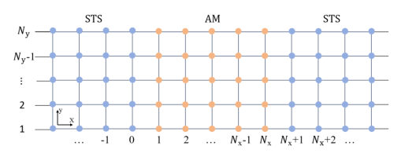
<figcaption class="paper-figure-caption"><b>Fig 2.</b> FIG. 2: Schematic illustration of the two-dimensional square lattice model for the discretization of the STS/AM/STS Josephson junctions.</figcaption>
</figure>
<figure class="paper-figure-card">

<figcaption class="paper-figure-caption"><b>Fig 3.</b> FIG. 3: The CPRS for different polar angles with (a) α=0.0π, (b) α=0.125π and (c) α=0.25π. The strength of altermagnetism is taken as tJ = 0.5. The black, red, and blue solid lines correspond to θ = 0, 0.3π, and 0.5π, respectively.</figcaption>
</figure>
<figure class="paper-figure-card">

<figcaption class="paper-figure-caption"><b>Fig 4.</b> FIG. 4: The critical current as a function of the polar angle of the d-vector for different orientation angles with (a) tJ = 0.1, (b) tJ = 0.3, (c) tJ = 0.5 and (d) tJ = 0.7. The black, red, and blue solid lines correspond to θ = 0, 0.3π, and 0.5π, respectively.</figcaption>
</figure>
<figure class="paper-figure-card">

<figcaption class="paper-figure-caption"><b>Fig 5.</b> FIG. 5: The critical current as a function of the orientation angle α of AM for different polar angles with (a) tJ = 0.1, (b) tJ = 0.3 (c) tJ = 0.5 and (d) tJ = 0.7. The black, red, and blue solid lines correspond to θ = 0, 0.3π, and 0.5π, respectively.</figcaption>
</figure>
</div>

<p><strong>Summary.</strong> The paper theoretically investigates Josephson junctions formed between spin-triplet superconductors and altermagnets. By analyzing the current-phase relations, the authors demonstrate that these junctions provide a sensitive probe to determine the intrinsic direction of the superconducting d-vector. This method is advantageous because it circumvents issues associated with external magnetic fields affecting the d-vector.</p>
<p><strong>Why it may be interesting.</strong> This work explores unconventional superconductivity interfaces where spin-orbit coupling and magnetism interact strongly, which is a rich area for studying emergent quantum phenomena beyond simple BCS theory.</p>
<details>
<summary>Detailed structure</summary>
<p><strong>Main problem.</strong> The primary goal is to develop a method to detect the intrinsic direction of the d-vector in spin-triplet superconductors (STS).</p>
<p><strong>Main result.</strong> The Josephson current-phase relationships and critical currents are shown to be highly sensitive to the d-vector orientation and the altermagnet's angle, enabling its detection.</p>
<p><strong>Method.</strong> Theoretical calculations employing the Green's function method on a lattice model.</p>
<p><strong>Model / system.</strong> The system modeled is an STS/Altermagnet (AM)/STS Josephson junction. The theoretical framework involves constructing and solving Bogoliubov-de Gennes Hamiltonians for each component.</p>
<p><strong>Key observables.</strong> Current-phase difference relationships (CPRs) and the critical current ($I_c$).</p>
<p><strong>Important parameters / regimes.</strong> The direction of the d-vector, the orientation angle ($\alpha$) of the altermagnet, and the strength of altermagnetism.</p>
<p><strong>Assumptions / limitations.</strong> The study assumes that the AM possesses zero net macroscopic magnetization, which is key to its utility in this detection scheme.</p>
<p><strong>Figures summary.</strong> Figure 1 schematically illustrates the junction structure and the dependence on d-vector direction and orientation angle $\alpha$.</p>
<p><strong>Paper structure.</strong> The paper systematically analyzes the Josephson effects by deriving current expressions based on Green's functions, showing how the resulting CPRs depend critically on the relative orientations of the superconducting order parameter ($\mathbf{d}$-vector) and the magnetic material (AM).</p>
</details>
<details>
<summary>Abstract</summary>
<p>We study the Josephson effects in the spin-triplet superconductor/altermagnet/spin-triplet superconductor junctions using the Green's function method. It is found that the current-phase difference relationships in the junctions strongly depend on the direction of the $\bf{d}$-vectors in the spin-triplet superconductors and the orientation angle of the altermagnet. For the given orientation angle, the $0$-$π$ transition can be obtained when the $\bf{d}$-vector is rotated. The variations of the critical current of the junctions with the direction of the $\bf{d}$-vector, the orientation angle and the strength of altermagnetism are systematically investigated. These Josephson effects can provide the distinguishable information about the direction of the $\bf{d}$-vector. Compared to the existing research, the proposed altermagnetic Josephson junctions can effectively avoid the negative influence of the magnetic field on the $\bf{d}$-vector and can serve as a feasible scheme for the detection of the intrinsic $\bf{d}$-vector. The obtained $0$-$π$ transition in the junctions can also have potential applications in the design of quantum devices.</p>
</details>
<p><sub><a href="#top">↑ back to top</a></sub></p>

<p><a id="paper-2607.04459"></a></p>
<h3 id="where-does-surface-math1630math-come-from-a-systematic-derivation-of-nonlinear-surface-susceptibilities-from-bulk-nonlocal-response"><a href="http://arxiv.org/abs/2607.04459v1">Where Does Surface $χ^{(2)}$ Come From? A Systematic Derivation of Nonlinear Surface Susceptibilities from Bulk Nonlocal Response</a></h3>
<p><strong>Authors:</strong> Zolla Frederic<br>
<strong>Type:</strong> theory · <strong>Category:</strong> other · <strong>PDF:</strong> <a href="https://arxiv.org/pdf/2607.04459v1">https://arxiv.org/pdf/2607.04459v1</a><br>
<strong>Analysis basis:</strong> full PDF text, analyzed in chunks
<strong>Topic relevance:</strong> <code>interference shaping light</code> <strong>1/5</strong></p>
<div class="figure-strip-hint">↔ Scroll figures horizontally</div>
<div class="paper-figures-scroll">
<figure class="paper-figure-card">
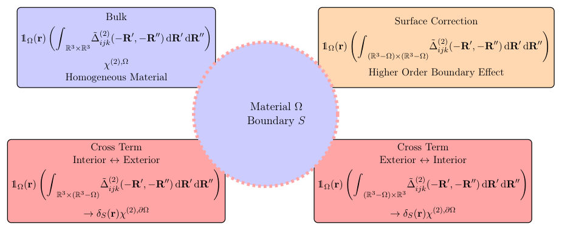
<figcaption class="paper-figure-caption"><b>Fig 1.</b> Figure 1: Schematic decomposition of the second-order polarization at a point r near the boundary ∂Ω. The integration domain over the two source variables (r′, r′′) splits into four cells: the homogeneous bulk contribution (top-left), a higher-order surface correction where both source points lie outside Ω(top-right), and two cross terms (bottom) where exactly one of the source points lies outside. After the distributional thin-layer limit, the two cross terms combine to produce the leading surface susceptibility χ(2),∂Ωsupported on ∂Ω.</figcaption>
</figure>
<figure class="paper-figure-card">
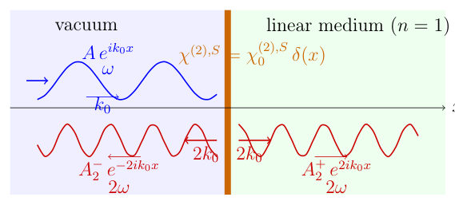
<figcaption class="paper-figure-caption"><b>Fig 2.</b> Figure 2: An idealised medium whose χ(2) reduces to a singular distribution localised at x = 0. The fundamental field u1 at frequency ω propagates from the left, and the second-harmonic field u2 at 2ω radiates outward from the interface on both sides.</figcaption>
</figure>
<figure class="paper-figure-card">
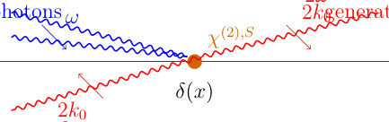
<figcaption class="paper-figure-caption"><b>Fig 3.</b> Figure 3: Photon-level picture: two photons at frequency ω combine at the surface χ(2)</figcaption>
</figure>
</div>

<p><strong>Summary.</strong> This paper develops a systematic, nonlocal theory to derive nonlinear surface susceptibilities ($\chi^{(2)}$) governing processes like Second Harmonic Generation. By combining distributional limits with moment expansions, the authors show that the complex bulk response simplifies into measurable surface coefficients. The work is significant for establishing rigorous selection rules based on material symmetry.</p>
<p><strong>Why it may be interesting.</strong> This work provides a rigorous theoretical framework connecting fundamental material symmetries (like centrosymmetry) directly to observable optical phenomena (SHG), which is crucial for designing advanced photonic materials or understanding surface-dominated quantum interactions.</p>
<details>
<summary>Detailed structure</summary>
<p><strong>Main problem.</strong> The paper systematically derives nonlinear surface susceptibilities ($\chi^{(2)}$) from the general theory of bulk nonlocal response for second-harmonic generation (SHG). It aims to quantify how interfacial effects dominate the optical response, especially when symmetry dictates zero bulk contributions.</p>
<p><strong>Main result.</strong> The leading order nonlinear surface susceptibility is shown to condense into two scalar components ($\chi^{(2),s}_\parallel$ and $\chi^{(2),s}_\perp$), and the problem reduces recursively to an effective linear susceptibility determined by the bulk kernel. Furthermore, it rigorously establishes selection rules showing that centrosymmetry forbids bulk SHG.</p>
<p><strong>Method.</strong> The methodology combines a distributional thin-layer limit with spatial moment expansions applied to general tensorial nonlocal constitutive relations. A key technique is the 'marginal integration principle,' which simplifies the nonlinear problem into an effective linear one.</p>
<p><strong>Model / system.</strong> The study models the nonlinear optical response of material interfaces (e.g., planar or spherical) exhibiting second-order polarization ($P^{(2)}$). The theory uses general tensorial nonlocal kernels ($   ilde{\Delta}^{(n)}$) to describe interactions across space.</p>
<p><strong>Key observables.</strong> Nonlinear surface susceptibilities ($\chi^{(2),s}_\parallel, \chi^{(2),s}_\perp$), the nonlinear surface moment tensor $M^{(2,0)}_{ijk}$, and SHG amplitudes in transmitted/reflected fields.</p>
<p><strong>Important parameters / regimes.</strong> The small parameter $\ell$ (thickness of the boundary layer) and the wave vector $k_0$ are crucial for analyzing the thin-layer limit. Curvature corrections appear at order $\ell^2$.</p>
<p><strong>Assumptions / limitations.</strong> Assumes rapid decay of fields, support in the bulk medium ($\Omega$), and utilizes a distributional framework extension from linear to nonlinear response.</p>
<p><strong>Figures summary.</strong> Figure 1 schematically illustrates the decomposition of polarization into four distinct spatial regions (e.g., $\Omega	imes\Omega$, $\partial\Omega 	imes \Omega$) which, upon taking the thin-layer limit, yield the surface susceptibility terms.</p>
<p><strong>Paper structure.</strong> The paper develops the theory by first extending a linear distributional framework to the nonlinear second-order case ($\chi^{(2)}$). It then applies moment expansions in 1D and generalizes them to 3D, culminating in deriving generalized nonlinear Maxwell boundary conditions for various geometries (planar/spherical) and establishing symmetry selection rules.</p>
</details>
<details>
<summary>Abstract</summary>
<p>We extend the distributional framework developed in the companion paper [Zolla, arXiv:2605.15716] to the nonlinear case, focusing on the second-order ($χ^{(2)}$) response responsible for second-harmonic generation (SHG). Starting from the most general tensorial nonlocal second-order constitutive relation and combining a spatial moment expansion with a distributional thin-layer limit, we show that the full complexity of the nonlinear interfacial response condenses, at leading order, into two scalars, the nonlinear surface susceptibilities $χ^{(2),s}_\parallel$ and $χ^{(2),s}_\perp$, associated with the tangential and normal components of the electric field, respectively. A key structural result is established: via a marginal integration over one field argument, the nonlinear surface problem reduces recursively to an effective linear one, whose surface susceptibility is determined by the bulk nonlinear kernel alone. Generalized nonlinear Maxwell boundary conditions are derived explicitly for planar and spherical interfaces, and curvature corrections are obtained systematically. The formalism is illustrated on Gaussian, Yukawa, and tensorial Lorentz kernels.</p>
</details>
<p><sub><a href="#top">↑ back to top</a></sub></p>
<h3 id="other-secondary-papers-2">Other secondary papers (2)</h3>
<details>
<summary>Show other secondary papers</summary>

<p><a id="paper-2607.04651"></a></p>
<h3 id="topological-electronic-states-and-phonon-mediated-superconductivity-in-ru-based-ternary-pnictides-zrruas-and-hfrup"><a href="http://arxiv.org/abs/2607.04651v1">Topological Electronic States and Phonon Mediated Superconductivity in Ru Based Ternary Pnictides: ZrRuAs and HfRuP</a></h3>
<p><strong>Authors:</strong> Jubair Hossan Abir, Tanvir Khan, Tauhidur Rahman, Md. Kamrul Hassan, Sraboni Saha Moly, Mst. Maskura Khatun, Raihana Shams Islam, Saleh Hasan Naqib<br>
<strong>Type:</strong> theory · <strong>Category:</strong> other · <strong>PDF:</strong> <a href="https://arxiv.org/pdf/2607.04651v1">https://arxiv.org/pdf/2607.04651v1</a><br>
<strong>Analysis basis:</strong> full PDF text, analyzed in chunks</p>
<div class="figure-strip-hint">↔ Scroll figures horizontally</div>
<div class="paper-figures-scroll">
<figure class="paper-figure-card">
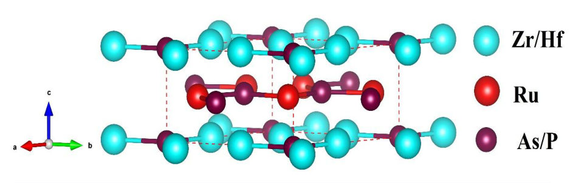
<figcaption class="paper-figure-caption"><b>Fig 1.</b> Figure 1. Schematic 3D representation of layered Crystal structures of ZrRuAs and HfRuP.</figcaption>
</figure>
<figure class="paper-figure-card">
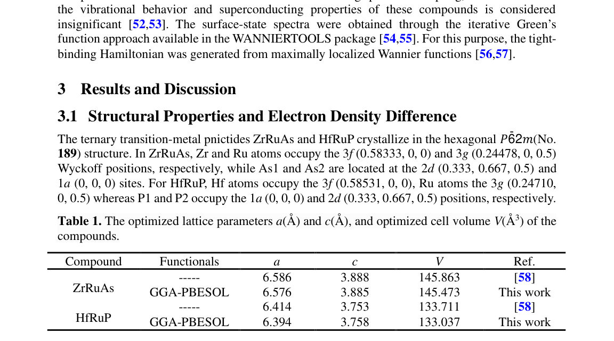
<figcaption class="paper-figure-caption"><b>Fig 2.</b> Figure 2. (a) and (b) illustrate the 2D electron density difference (EDD) contour maps of the Ru- Zr-As and Ru-Hf-P systems, respectively. The color scale represents the degree of electron accumulation and depletion within the crystal structure. In the contour maps, the blue regions correspond to electron accumulation, whereas the yellow/red regions indicate electron depletion, demonstrating the redistribution of charge caused by chemical bonding and orbital hybridization among the constituent atoms.</figcaption>
</figure>
<figure class="paper-figure-card">
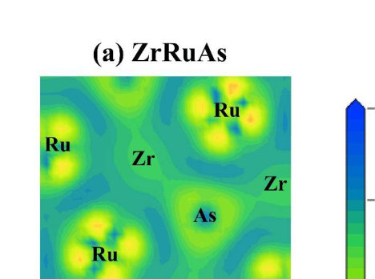
<figcaption class="paper-figure-caption"><b>Fig 3.</b> Figure 2. The electron density difference maps for (a) ZrRuAs and (b) HfRuP.</figcaption>
</figure>
<figure class="paper-figure-card">

<figcaption class="paper-figure-caption"><b>Fig 4.</b> Figure 3. 3D representation of the mechanical properties of ZrRuAs and HfRuP in terms of Young’s modulus, Shear modulus, Linear compressibility and Poisson’s ratio.</figcaption>
</figure>
<figure class="paper-figure-card">
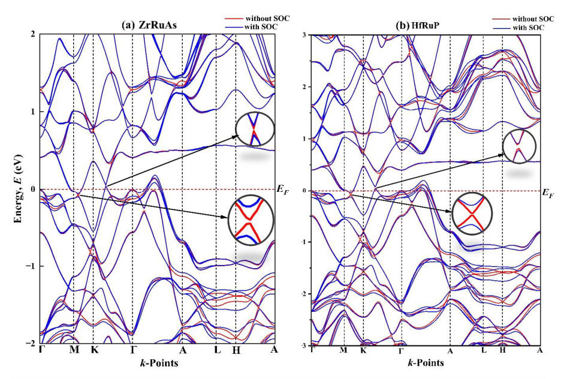
<figcaption class="paper-figure-caption"><b>Fig 5.</b> Figure 4. Calculated electronic band Structure of ZrRuAs and HfRuP without and with SOC.</figcaption>
</figure>
</div>
<p><strong>Summary.</strong> This paper computationally investigates ZrRuAs and HfRuP, characterizing them as topological semimetals with predicted conventional superconductivity. Using DFT calculations, the authors detail their structural stability, mechanical ductility, and electronic band features, providing a comprehensive materials science profile for these pnictides.</p>
<p><strong>Why it may be interesting.</strong> While focused on solid-state physics rather than AMO systems, the use of advanced computational methods to link topological electronic states directly to macroscopic properties like superconductivity is methodologically relevant for understanding emergent quantum phenomena in condensed matter.</p>
<details>
<summary>Detailed structure</summary>
<p><strong>Main problem.</strong> The study investigates the comprehensive physical properties, including electronic, mechanical, optical, thermodynamic, and superconducting characteristics of two ternary pnictides: ZrRuAs and HfRuP.</p>
<p><strong>Main result.</strong> Both compounds exhibit topological semimetallic behavior and are predicted to be ductile and highly machinable. They also show evidence of conventional superconductivity with estimated transition temperatures around 9-10 K.</p>
<p><strong>Method.</strong> The research relies heavily on first-principles calculations using DFT (PBE-GGA) for electronic structure, mechanical properties derived from elastic constants, and thermodynamic modeling.</p>
<p><strong>Model / system.</strong> The physical systems are the crystalline materials ZrRuAs and HfRuP, which possess a hexagonal crystal structure. The analysis covers their band structures, charge distributions via EDD maps, and bulk/shear moduli.</p>
<p><strong>Key observables.</strong> Topological semimetallic behavior, superconducting transition temperatures ($T_c$), Pugh's ratio, Poisson’s ratio, Bulk modulus (B), Shear modulus (G), and Machinability index ($\mu_M$).</p>
<p><strong>Important parameters / regimes.</strong> The calculations are performed using specific computational parameters like the PBE-GGA functional, $12 	imes 12 	imes 12$ k-point meshes, and temperature/pressure ranges for thermodynamic fitting.</p>
<p><strong>Assumptions / limitations.</strong> The primary assumptions involve the accuracy of DFT approximations (PBE-GGA) in describing complex electronic correlations and superconducting mechanisms.</p>
<p><strong>Figures summary.</strong> Figure 1 shows the layered crystal structures; Figure 2 displays Electron Density Difference (EDD) contour maps illustrating charge accumulation/depletion; Tables summarize optimized lattice parameters, elastic constants, and macroscopic mechanical properties.</p>
<p><strong>Paper structure.</strong> The paper follows a structure of initial structural characterization, followed by detailed electronic band structure analysis (including SOC effects), calculation of mechanical stability metrics, thermodynamic assessment, and finally, the determination of superconducting transition temperatures.</p>
</details>
<details>
<summary>Abstract</summary>
<p>This study investigates the structural, electronic, mechanical, optical, thermodynamic, and superconducting properties of ZrRuAs and HfRuP. Electronic band structure calculations reveal topological semimetallic behavior in both compounds with several bands crossing the Fermi level. The inclusion of spin orbit coupling lifts band degeneracies in both compounds. The Fermi surface shows both electron and hole segments. The estimated Pugh ratio, Poisson ratio and machinability index indicate that both compounds are ductile in nature and exhibit excellent machinability. Optical results show metallic reflectivity and notable absorption in the ultraviolet region. Thermodynamic analysis indicates stable behavior. The estimated superconducting transition temperatures are 9.75 K for ZrRuAs and 9.03 K for HfRuP that indicates strong coupling conventional superconductivity. The results provide a detailed view of the physical and superconducting properties of ZrRuAs and HfRuP and help to close the existing research gaps in these topological superconducting materials.</p>
</details>
<p><sub><a href="#top">↑ back to top</a></sub></p>

<p><a id="paper-2607.03712"></a></p>
<h3 id="tuning-superconductivity-by-isovalent-antimony-substitution-in-prfeasof"><a href="http://arxiv.org/abs/2607.03712v1">Tuning Superconductivity by Isovalent Antimony Substitution in PrFeAs(O,F)</a></h3>
<p><strong>Authors:</strong> Priya Singh, Konrad Kwatek, Tatiana Zajarniuk, Taras Palasyuk, Cezariusz Jastrzębski, Michał Wierzbicki, Tomasz Cetner, Andrzej Szewczyk, Shiv J. Singh<br>
<strong>Type:</strong> both · <strong>Category:</strong> strongly correlated electrons · <strong>PDF:</strong> <a href="https://arxiv.org/pdf/2607.03712v1">https://arxiv.org/pdf/2607.03712v1</a><br>
<strong>Analysis basis:</strong> full PDF text, analyzed in chunks</p>
<div class="figure-strip-hint">↔ Scroll figures horizontally</div>
<div class="paper-figures-scroll">
<figure class="paper-figure-card">
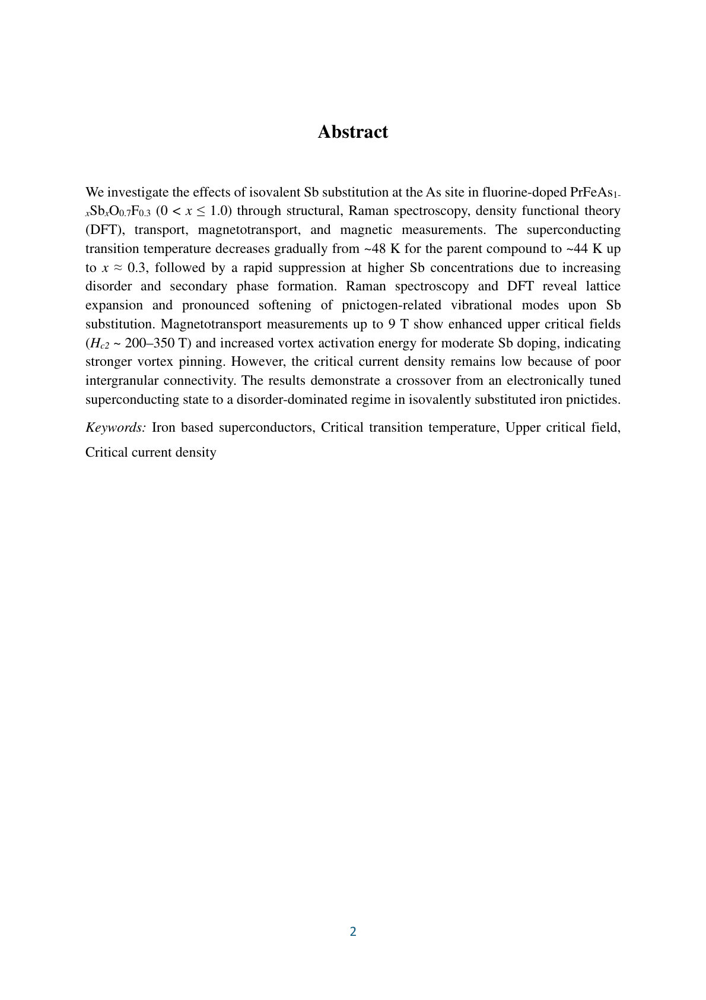
<figcaption class="paper-figure-caption"><b>Fig 1.</b> Low-resolution page preview, page 2</figcaption>
</figure>
<figure class="paper-figure-card">
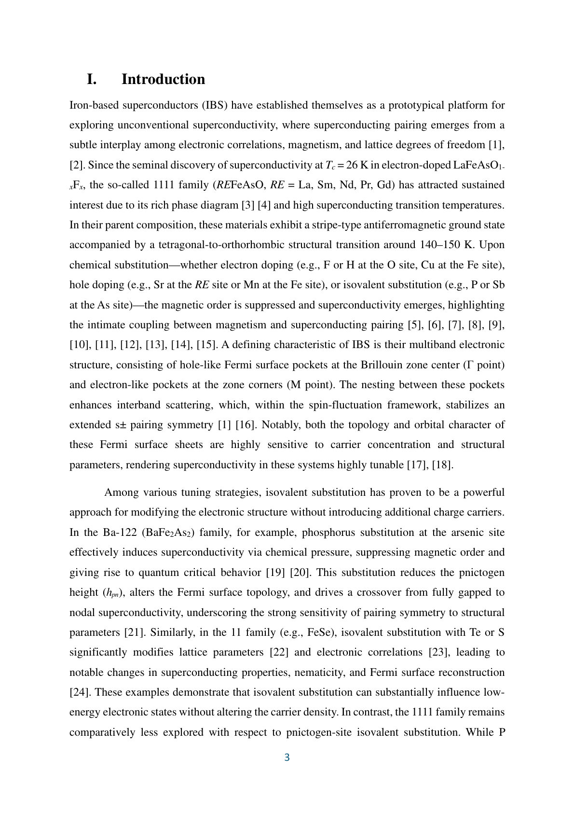
<figcaption class="paper-figure-caption"><b>Fig 2.</b> Low-resolution page preview, page 3</figcaption>
</figure>
<figure class="paper-figure-card">

<figcaption class="paper-figure-caption"><b>Fig 3.</b> Low-resolution page preview, page 4</figcaption>
</figure>
<figure class="paper-figure-card">
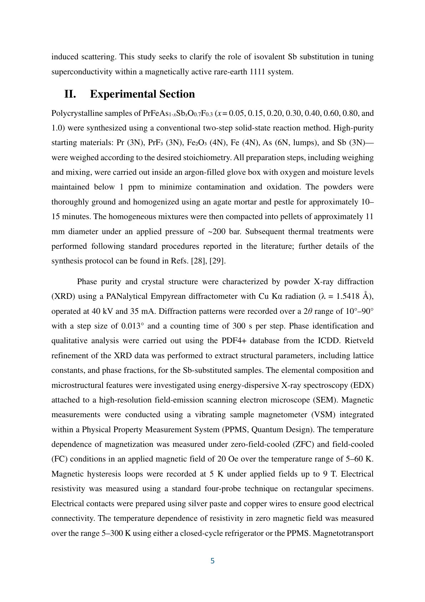
<figcaption class="paper-figure-caption"><b>Fig 4.</b> Low-resolution page preview, page 5</figcaption>
</figure>
<figure class="paper-figure-card">

<figcaption class="paper-figure-caption"><b>Fig 5.</b> Low-resolution page preview, page 6</figcaption>
</figure>
</div>
<p><strong>Summary.</strong> This paper systematically investigates the impact of substituting Antimony for Arsenic in a fluorine-doped iron pnictide superconductor. Using a combination of structural, spectroscopic, and transport measurements, the authors map out how doping tunes superconductivity, revealing a competition between beneficial electronic tuning effects and detrimental disorder-induced scattering mechanisms.</p>
<p><strong>Why it may be interesting.</strong> Iron pnictides are canonical examples of unconventional superconductors whose pairing mechanism is strongly influenced by spin fluctuations and crystal structure, making this work highly relevant to correlated electron physics.</p>
<details>
<summary>Detailed structure</summary>
<p><strong>Main problem.</strong> The study investigates how isovalent Antimony (Sb) substitution at the As site tunes superconductivity in fluorine-doped PrFeAs(O,F) iron pnictides.</p>
<p><strong>Main result.</strong> Superconductivity initially decreases with Sb doping but shows enhanced upper critical fields and vortex pinning for moderate doping, ultimately crossing over from an electronically tuned state to a disorder-dominated regime.</p>
<p><strong>Method.</strong> The research combines structural characterization (XRD), lattice dynamics (Raman spectroscopy), transport measurements (resistivity/magnetotransport up to 9 T), magnetic measurements, and theoretical calculations (DFT).</p>
<p><strong>Model / system.</strong> The physical system is the iron pnictide superconductor $   ext{PrFeAs}<em 0.7>{1-x}   ext{Sb}_x   ext{O}</em>$. The study probes how substituting As with Sb modifies the electronic structure and lattice parameters.}    ext{F}_{0.3</p>
<p><strong>Key observables.</strong> Superconducting transition temperature ($T_c$), upper critical field ($H_{c2}$), vortex activation energy, lattice parameters (especially $c$ and volume $V$), and phonon mode shifts.</p>
<p><strong>Important parameters / regimes.</strong> Sb concentration ($x$), magnetic field strength (up to 9 T), and the doping regime (low vs. high $x$).</p>
<p><strong>Assumptions / limitations.</strong> The analysis assumes that structural changes, lattice expansion, and disorder effects can be separated or modeled to understand the superconducting mechanism.</p>
<p><strong>Figures summary.</strong> Figures detail structural evolution via XRD/Rietveld refinement, phonon shifts from Raman spectroscopy across doping levels, and transport properties showing $T_c$, $H_{c2}$, and critical current density ($J_c$) dependence on Sb content.</p>
<p><strong>Paper structure.</strong> The paper follows a comprehensive characterization approach: structural analysis (XRD/EDX) establishes phase purity and lattice changes; Raman spectroscopy probes vibrational modes; transport measurements map the superconducting dome and vortex dynamics; and DFT provides theoretical context for these observed electronic and structural modifications.</p>
</details>
<details>
<summary>Abstract</summary>
<p>We investigate the effects of isovalent Sb substitution at the As site in fluorine-doped PrFeAs1-xSbxO0.7F0.3 (x = 0 to 1.0) through structural, Raman spectroscopy, density functional theory (DFT), transport, magnetotransport, and magnetic measurements. The superconducting transition temperature decreases gradually from ~48 K for the parent compound to ~44 K up to x = 0.3, followed by a rapid suppression at higher Sb concentrations due to increasing disorder and secondary phase formation. Raman spectroscopy and DFT reveal lattice expansion and pronounced softening of pnictogen related vibrational modes upon Sb substitution. Magnetotransport measurements up to 9 T show enhanced upper critical fields and increased vortex activation energy for moderate Sb doping, indicating stronger vortex pinning. However, the critical current density remains low because of poor intergranular connectivity. The results demonstrate a crossover from an electronically tuned superconducting state to a disorder-dominated regime in isovalently substituted iron pnictides.</p>
</details>
<p><sub><a href="#top">↑ back to top</a></sub></p>
</details>

<hr>
<p>
<a href="index.html">← Index</a>
 · <a href="papers_08.html">← Previous</a>
</p>
<hr>

</body>
</html>
